33/39 lolos audit dan terpasang. Semua karakter dipilih dari entri dengan informasi lengkap. Ilustrasi adalah interpretasi artistik AI berdasarkan sumber riset.
Korean virgin ghost
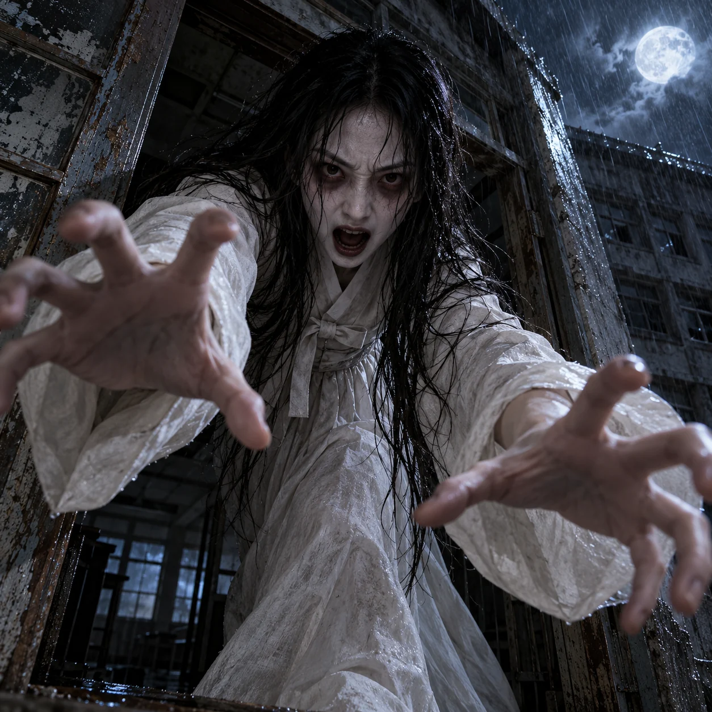
Korean virgin ghost, resentful spirit of an unmarried woman
Aura: Documented anatomy and active encounter create imposing presence, no generic aura.
Audit ciri dan sumber
- [object Object]
- [object Object]
- [object Object]
- [object Object]
Native and 200px inspected: one adult pale face, two dark-ringed eyes, loose black hair, opaque white mourning hanbok, two forward hands with five fingers each. Fierce vengeful doorway lunge in abandoned school c04/c12, no blood, extra anatomy, curse beams or borrowed screen design. Subject confrontational at 200px; all Sangar criteria pass.
Review sumberONE original square premium painterly cinematic Mitoloka illustration of Korean virgin ghost, resentful spirit of an unmarried woman.
ANATOMY: ONE pale white-faced young ADULT woman ghost with two sunken eyes and heavy DARK CIRCLES, long loose unbound BLACK HAIR [korean-virgin-ghost-c14,korean-virgin-ghost-c03]. ONE head, TWO arms and TWO legs beneath fully opaque WHITE MOURNING HANBOK [korean-virgin-ghost-c03]. No wounds, blood, fangs, horns or extra anatomy.
MOMENT: Lunge forward out of an abandoned school doorway toward viewer, both pale hands thrust near camera in a furious vengeful reach, body leaning steeply and white hanbok sleeves whipping; mouth open in silent angry cry, dark-ringed eyes stare directly at viewer. No victim shown.
POWER: Haunts in anger and revenge [korean-virgin-ghost-c12], resentment [korean-virgin-ghost-c05]. No visible illness beam or invented curse effect; only ghostly intrusion and anger.
SCALE & CAMERA: extreme low angle; very tight low doorway framing, pale face and dark eye circles dominate upperhalf and two hands fill foreground; normal human scale.
LIGHT & WEATHER: one dominant cold moon or amber sunset, deep walnut shadows, strong rim light, physical rain or dust appropriate to scene.
SURFACE: tactile natural skin, coarse opaque cloth, wet hair, wood and stone; premium painterly brushwork.
SETTING: Abandoned dark school building [korean-virgin-ghost-c04].
MOOD: imposing active encounter, never cute, calm or decorative. Preserve benevolent figures as dignified and noble, not evil.
HARD CONSTRAINTS: no text, pseudoletters, inscriptions, logo, border, frame or watermark; no extra heads, eyes, limbs or fingers; no borrowed film, game, anime or comic designs; fully opaque clothing on humanoids; no nudity, blood or explicit gore; no generic glow aura, neon outline, floating runes or energy ribbons.
Kunekune (urban legend)
Menunggu gambar yang lolos audit
Kuzunoha
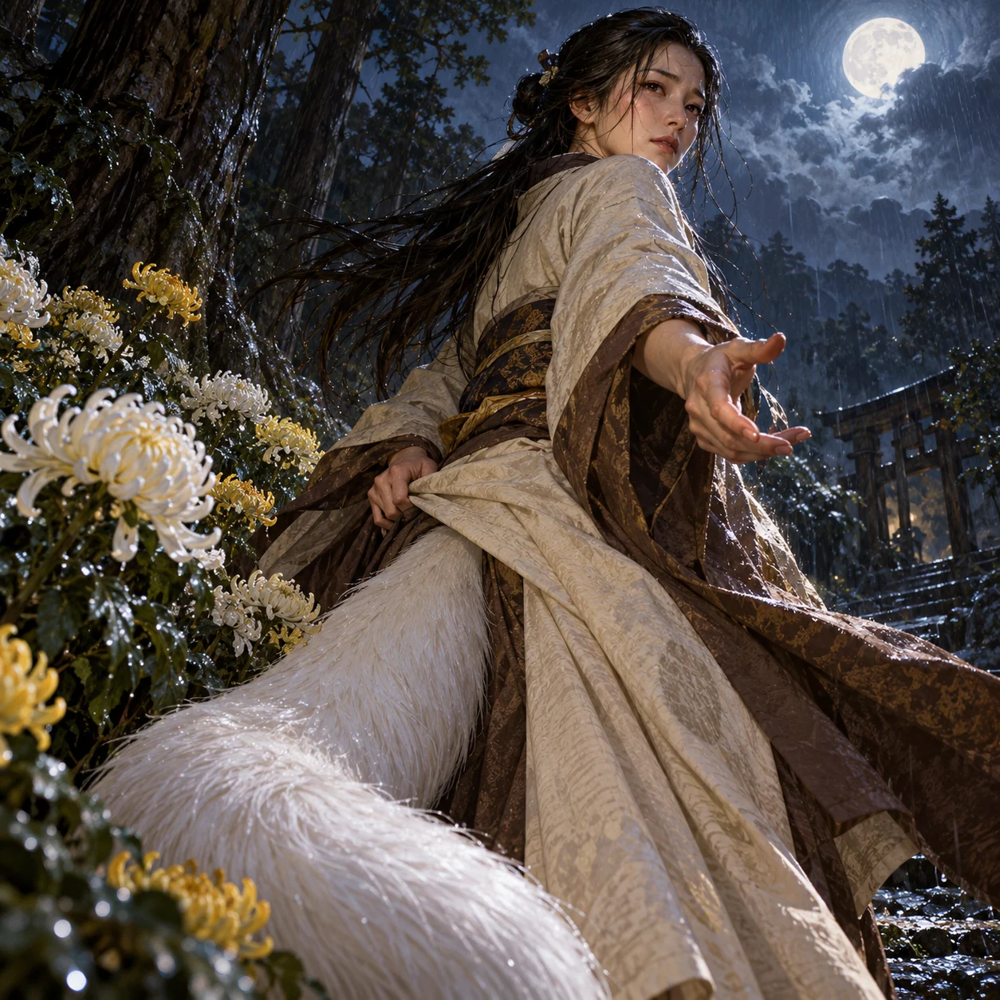
Kuzunoha, benevolent white fox spirit whose human disguise is revealed
Aura: Documented anatomy and active encounter create imposing presence, no generic aura.
Audit ciri dan sumber
- [object Object]
- [object Object]
- [object Object]
- [object Object]
Native and 200px inspected: one human woman face/two eyes/two arms and natural hands, opaque layered robe, ONE clearly furry white fox tail emerging beneath robe at lower back and sweeping foreground. Turning farewell reach amid chrysanthemums and Shinoda forest, noble intense sorrow rather than evil. Human/fox revelation distinctive at200; no added fox ears or aura/text. All Sangar criteria pass.
Review sumberONE original square premium painterly cinematic Mitoloka illustration of Kuzunoha, benevolent white fox spirit whose human disguise is revealed.
ANATOMY: ONE dignified adult Japanese woman in a fully opaque layered plain ivory and brown robe, one head, TWO human eyes, TWO arms, TWO legs; ONE LONG WHITE FOX TAIL visibly emerges from behind her robe [kuzunoha-c04,kuzunoha-c05,kuzunoha-c08]. Human face fully human, no fox ears, extra tails or hybrid muzzle. Tail clearly living fur, broad and unmistakably attached at lower back.
MOMENT: Turn sharply away from chrysanthemums toward viewer at moment white fox tail slips fully out behind robe, one hand sweeps robe aside unintentionally exposing the tail, other reaches toward viewer in poignant farewell. Noble intense protective face, grief and resolve rather than evil or flirtation. Hair and sleeve sweep with the turn. No child needed.
POWER: Human form revealed by glimpse of tail beside chrysanthemums [kuzunoha-c05]; returning to wild Shinoda forest [kuzunoha-c08]. No invented spell particles or glowing fox magic.
SCALE & CAMERA: extreme low angle; low close three-quarter body with white tail curving large across foreground beside robe, face and tail both clear; ordinary human scale.
LIGHT & WEATHER: one dominant cold moon or amber sunset, deep walnut shadows, strong rim light, physical rain or dust appropriate to scene.
SURFACE: tactile natural skin, coarse opaque cloth, wet hair, wood and stone; premium painterly brushwork.
SETTING: Chrysanthemums at edge of Shinoda forest [kuzunoha-c05,kuzunoha-c08].
MOOD: imposing active encounter, never cute, calm or decorative. Preserve benevolent figures as dignified and noble, not evil.
HARD CONSTRAINTS: no text, pseudoletters, inscriptions, logo, border, frame or watermark; no extra heads, eyes, limbs or fingers; no borrowed film, game, anime or comic designs; fully opaque clothing on humanoids; no nudity, blood or explicit gore; no generic glow aura, neon outline, floating runes or energy ribbons.
Kyōkotsu
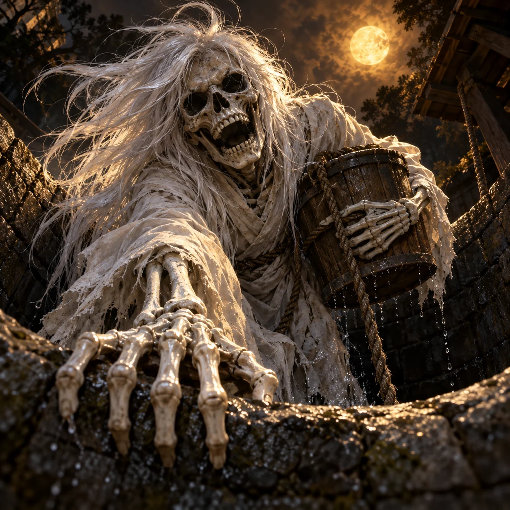
Kyokotsu, white-haired skeletal yokai rising from a well
Aura: Documented anatomy and active manifestation supply force without generic aura.
Audit ciri dan sumber
- [object Object]
- [object Object]
- [object Object]
Native and 200px inspected: clean skull/two empty eye sockets, long white hair, white ragged garment, two skeletal arms with five-digit foreground hand; bucket and rope attached beside torso, rises over stone well rim. Angry open-jaw emergence, no flesh/gore, visible curse effect, text or aura. All Sangar criteria pass.
Review sumberONE original square premium painterly cinematic Mitoloka illustration of Kyokotsu, white-haired skeletal yokai rising from a well.
ANATOMY: ONE clean bleached human SKELETON with one skull, TWO dark empty eye sockets, TWO bony arms and TWO legs hidden beneath a fully opaque WHITE ragged garment; long tangled WHITE HAIR on skull [kyokotsu-c02]. No flesh, blood, wounds or eyes in sockets. Skeletal hands anatomically five fingers. One plain old wooden BUCKET attached by rope near waist [kyokotsu-c03].
MOMENT: Heave upward toward viewer from a deep stone WELL, one bony hand claws over well rim near camera and other pulls the wet wooden bucket against chest; skull leans over rim in angry open-jawed confrontation, tangled white hair whips upward. White garment drags wetly over stone.
POWER: Rises from well attached to bucket [kyokotsu-c03], intense resentment [kyokotsu-c04,kyokotsu-c07]. No visible curse spells, green light or energy; physical emergence only.
SCALE & CAMERA: extreme low angle; very low close well-rim camera, skull/bonyhand dominate foreground, wellmouth and bucket visible; no giant size.
LIGHT & WEATHER: one dominant low amber moon or natural sun as specified, deep walnut shadows, hard rim light, physical spray or dust.
SURFACE: tactile bleached bone, coarse opaque cloth, wet hair, stone and wood, premium painterly brushwork.
SETTING: Old stone well [kyokotsu-c03,kyokotsu-c07].
MOOD: imposing active encounter, never cute, calm or decorative.
HARD CONSTRAINTS: no text, pseudoletters, inscriptions, logo, border, frame or watermark; no extra heads, eyes, limbs or fingers; no film, game, anime or comic designs; fully opaque clothing on humanoids; no nudity, blood or explicit gore; no generic glow aura, neon outline, floating runes or energy ribbons.
La Bolefuego
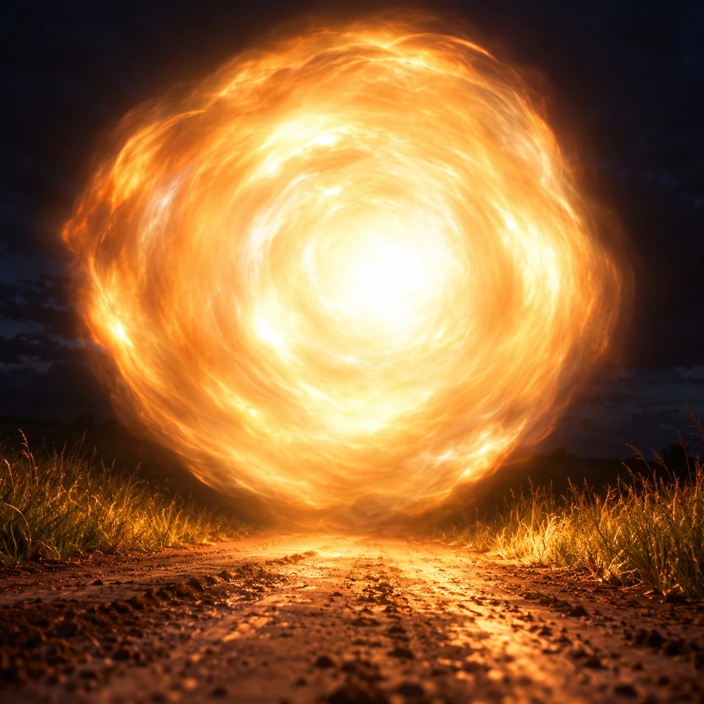
Lanternlike no-heat light manifestation c02/c09, no internal human silhouette.
Aura: The c02/c09 light is the whole manifestation, not an aura around a body.
Audit ciri dan sumber
- [object Object]
- [object Object]
- [object Object]
Native and 200px inspected: whole being is one large whirling lanternlike light apparition c02/c09, no bodily figure/aura distinction. Apparition dominates road, lights dry grass/road without igniting or harming anything; no humans, faces or burning scenery. Swirling luminous patches stage documented spinning, no letters or borrowed design. Overwhelming close manifestation at200; all Sangar criteria pass. Prior moderation failure preserved separately.
Review sumberONE original square premium painterly cinematic Mitoloka illustration of La Bolefuego, the bright lanternlike light apparition of Los Llanos.
ANATOMY: ONE round luminous orange-white apparition like a flashing lantern, but without any physical lantern cage [la-bolefuego-c02,la-bolefuego-c09]. Its entire form is pure light; NO humans, faces, silhouettes, animals, bodies, flames, burning objects, victims or injuries anywhere.
MOMENT: Sweep and whirl closely above the empty road toward viewer, asymmetric concentric soft patches of warm light give the documented shaking and spinning appearance [la-bolefuego-c02]. Large brilliant centre dominates frame; light falls physically onto the road and nearby grass.
POWER: Emits NO HEAT while lighting the entire road [la-bolefuego-c09]. This bright light IS the whole documented being, not a generic aura around a creature. No damage or fire effects.
SCALE & CAMERA: very low road-level close composition, apparition occupies eighty percent of square, road small beneath it. No tiny distant light or empty landscape composition.
LIGHT & WEATHER: the apparition is the sole dominant warm light source against deep walnut and indigo night, naturally lit grass and rutted road.
SURFACE: luminous pearlescent light with intense bright centre and turbulent irregular outline, tactile rough road and grasses.
SETTING: dark Los Llanos road across Venezuelan/Colombian plains [la-bolefuego-c01,la-bolefuego-c02,la-bolefuego-c06].
MOOD: uncanny overwhelming supernatural presence, active close encounter, not cute or calm.
HARD CONSTRAINTS: no text, lettering, logos, border, watermark, people, bodies, harm, violence, fire, flames, smoke or burning scenery; no film/game/anime/comic designs; no neon outline, symbols, runes or energy ribbons.
La Diablesse
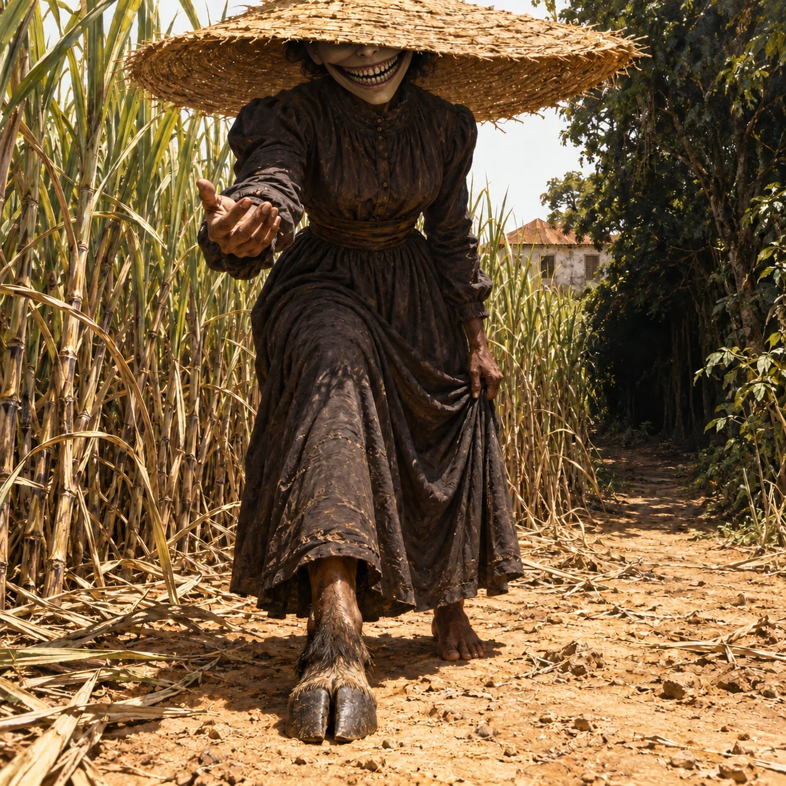
La Diablesse revealing hidden goblin-horror lower face while beckoning at windless noon; one cow hoof and one human foot
Aura: No aura; danger from hidden hideous face c02/c09, one cow hoof c02 and lure gesture c03 under oppressive noon c08.
Audit ciri dan sumber
- [object Object]
- [object Object]
- [object Object]
Native1254,200px and4x face crop inspected. Lower face now plainly supernatural: mouth runs impossibly wide toward cheek edges beneath hatshadow, stretched thin margins and excessive small crowded teeth in two uneven rows; no ordinary warm older-woman smile. Nose/upperface remain normally proportioned and shadow-hidden; horror comes from mouth geometry rather than ethnic feature exaggeration, no fangs/gore. One cow hoof and separate five-toed human foot, two normal hands, full opaque high-neck long-sleeved dress to ankle, no thigh/upskirt. Still cane/white-hot windless noon/dark forest path and house visually preserved. At200 unnatural grin and hugehoof support threat. No aura/text/victim. Seven Sangar checks pass.
Review sumberEDIT THE REFERENCED IMAGE. Preserve the full existing composition and every feature EXCEPT the VISIBLE LOWER FACE under the straw hat. Keep same hat, same hidden eyes/upper face, same hands, fully covered high-neck long-sleeved dress, exactly one cow hoof and one five-toed human foot, ankle hem, low frontal modest camera, still cane, white-hot noon, plantation house and dark forest path.
Change ONLY lower-face expression/anatomical distortion to the documented supernatural GOBLIN HORROR and HIDEOUS LAUGHTER [la-diablesse-c02,c09]. The existing warm natural grin is WRONG. Make the MOUTH split impossibly WIDE, far past the natural cheek boundaries into black shadow beneath both sides of the hat: a broad unnatural horizontal opening, NOT an ordinary old woman smiling. Thin lips pulled taut, many TOO-MANY tiny uneven blunt teeth in two irregular crowded rows, NO fangs. Cheek planes supernaturally sunken and ashen like dried cane husk, JAW tilted at a subtly impossible crooked angle. Face must unmistakably read NOT HUMAN in its laughter even at200px. No blood, wound or torn skin: intact supernatural skin, impossible expression only. No skull.
Preserve the woman's ancestry/identity and normal nose. Horror must come from impossible mouth width, tooth multiplicity and wrong jaw geometry, never exaggerated racial features. Do not enlarge lips/nose or caricature ethnicity. No beautiful warm smile, cheerful eyes or friendly wrinkles. Upper face/eyes stay hidden by enormous brim as before.
No changes to body, clothes, limbs, lighting, environment, framing or camera. No text, labels, aura, magic, film/game/anime/comic borrowing or gore.
La Llorona
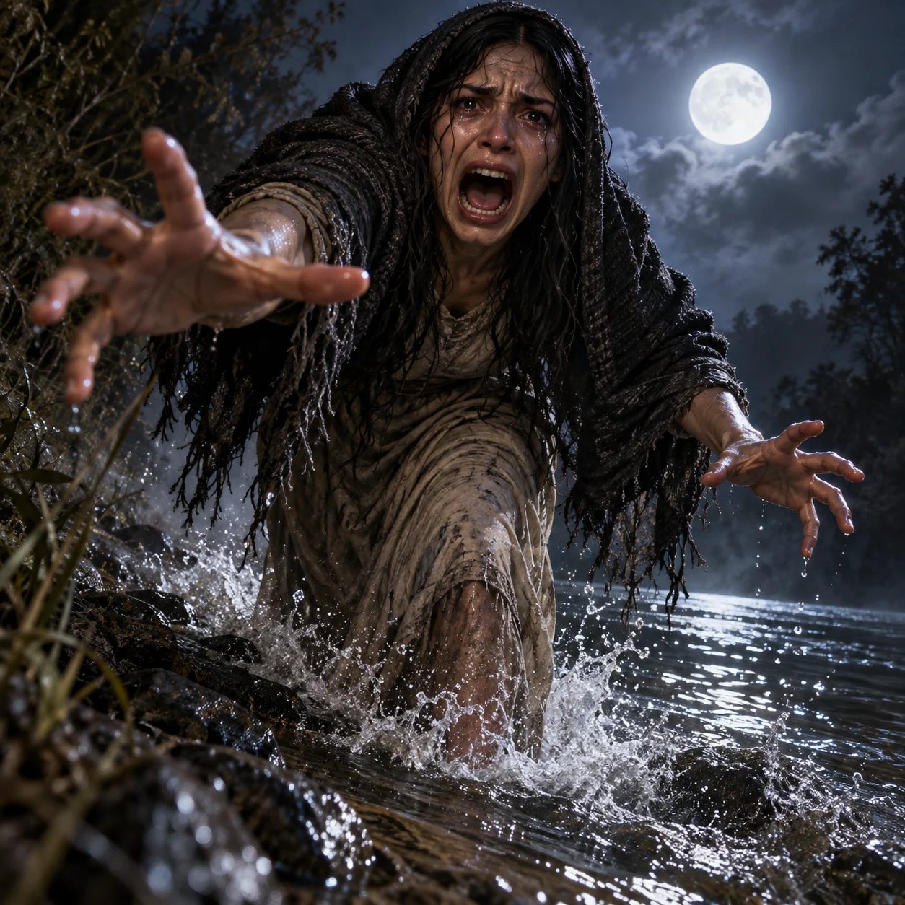
La Llorona, weeping vengeful river ghost of Mexican tradition
Aura: Documented appearance/deed provides presence, no generic aura.
Audit ciri dan sumber
- [object Object]
- [object Object]
- [object Object]
Native and 200px inspected: one adult woman with two eyes, visible ordinary tears, dark rebozo and taupe opaque dress, two five-digit reaching hands, running knee and water impact. Wailing open-mouth pursuit c11/c12 at river night c05; no bridal movie design, children, victims, invented curse energy or anatomy. Extreme close dangerous encounter remains readable at200; all Sangar criteria pass.
Review sumberONE original square premium painterly cinematic Mitoloka illustration of La Llorona, weeping vengeful river ghost of Mexican tradition.
ANATOMY: ONE ADULT woman ghost, one head, TWO eyes, TWO arms and TWO legs beneath a fully opaque coarse dark CHARCOAL REBOZO shawl and long taupe dress [la-llorona-c10]. Deeply grief-stricken adult human face with streaming ordinary tears, eyes wide with anguish, long dark hair under shawl; no corpse decay, skullface, fangs or invented eyes. Not white bridal gown, no wedding veil.
MOMENT: Pursue toward viewer through shallow river edge, both outstretched hands reaching forward as she WAILS with mouth wide open in anguished rage, tears on cheeks, wet rebozo and skirt dragged through water. Direct confrontational gaze, water splashes from running feet. No children, victims, bodies or death scene.
POWER: Wails and shrieks at night, dangerous encounters [la-llorona-c11], sometimes pursues viewer [la-llorona-c12]; ordinary tears and running water only. No visible curse waves or invented ghost energy.
SCALE & CAMERA: extreme low angle; tight low riverbank pursuit, wailing face and reaching hands dominate foreground; normal adult human scale.
LIGHT & WEATHER: one dominant cold moon or source fire if documented, deep walnut shadows, strong rim light; ordinary physical dust or spray.
SURFACE: tactile skin, coarse fully opaque cloth, wet hair, wood and stone; premium painterly brushwork.
SETTING: River edge at night [la-llorona-c05,la-llorona-c10,la-llorona-c11].
MOOD: imposing active encounter, never cute, calm or decorative; sacred gods depicted reverently and majestically.
HARD CONSTRAINTS: no text, pseudoletters, inscriptions, logo, border, frame or watermark; no extra heads, eyes, limbs or fingers; no film, game, anime or comic designs; fully opaque clothing on humanoids; no nudity, blood or explicit gore; no generic glow aura, neon outline, floating runes or energy ribbons.
Lawdasura
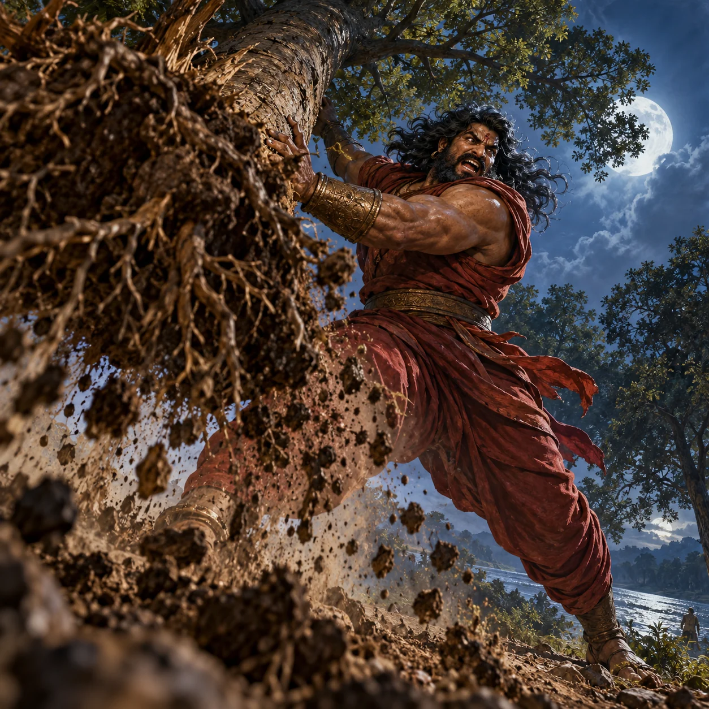
Lavanasura or Lawdasura, the Ramayana asura who uproots and hurls trees
Aura: Documented appearance/deed provides presence, no generic aura.
Audit ciri dan sumber
- [object Object]
- [object Object]
- [object Object]
Native and 200px inspected: one humanlike asura head/two eyes/two arms gripping a whole uprooted tree; two braced legs, opaque red tunic and trousers. Rootmass thrust toward viewer with soil clods; physical c06 tree throw, no trident/fire or injured target. Small distant bystander stays safe in background, no giant scale claimed. Face and impossible tree weight make action imposing. No text/aura; all Sangar criteria pass.
Review sumberONE original square premium painterly cinematic Mitoloka illustration of Lavanasura or Lawdasura, the Ramayana asura who uproots and hurls trees.
ANATOMY: ONE powerful adult male humanlike asura figure, one head, TWO eyes, TWO arms and TWO legs; fierce human face, dark hair, fully opaque earth-red layered tunic, loose trousers and simple unmarked bronze armguards. No horns, wings, fangs, extra eyes or limbs invented. Restraint in unspecified body form; identity as asura [lawdasura-c01].
MOMENT: Throw ONE huge freshly UPROOTED TREE toward viewer with both hands, roots and clods of soil at nearest foreground, trunk sweeping diagonally overhead. Full humanlike body braced in twisting throw, mouth sternly open, tree weight visibly impossible for ordinary person; show no person struck and no trident in hand during this fight.
POWER: During fight he uproots and throws trees [lawdasura-c06]. Physical tree roots/soil/dust only; do NOT add fire or spear effects, since this moment shows him without invincible weapon c05.
SCALE & CAMERA: extreme low angle; very low close action, tree rootmass foreshortened near camera and thrower face prominent above; normal humanlike scale with massive whole tree as strength evidence.
LIGHT & WEATHER: one dominant cold moon or source fire if documented, deep walnut shadows, strong rim light; ordinary physical dust or spray.
SURFACE: tactile skin, coarse fully opaque cloth, wet hair, wood and stone; premium painterly brushwork.
SETTING: Madhu forest near Yamuna plain, choose forest from c12 [lawdasura-c12].
MOOD: imposing active encounter, never cute, calm or decorative; sacred gods depicted reverently and majestically.
HARD CONSTRAINTS: no text, pseudoletters, inscriptions, logo, border, frame or watermark; no extra heads, eyes, limbs or fingers; no film, game, anime or comic designs; fully opaque clothing on humanoids; no nudity, blood or explicit gore; no generic glow aura, neon outline, floating runes or energy ribbons.
Lugh
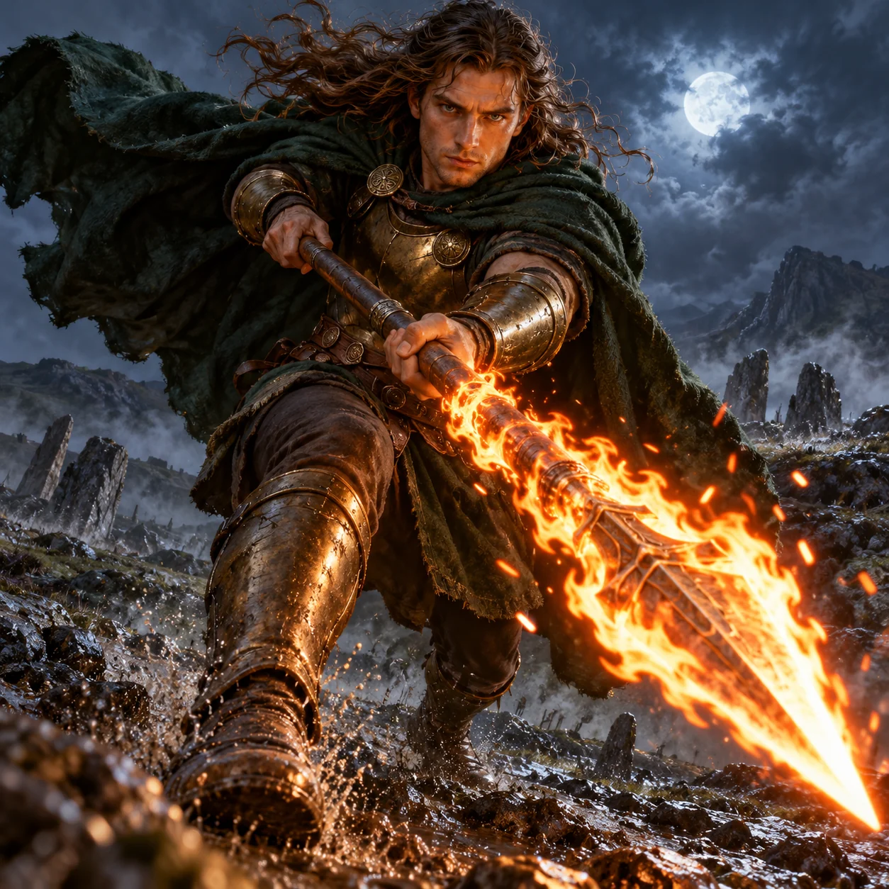
Lugh, revered Irish warrior king of the Tuatha De Danann with fiery spear
Aura: Documented appearance/deed provides presence, no generic aura.
Audit ciri dan sumber
- [object Object]
- [object Object]
- [object Object]
Native and 200px inspected: one dignified humanlike deity, two eyes/arms/hands and two braced legs, opaque green cloak/bronze armour; both hands wield one long real spear whose head/upper shaft alone burns. Powerful protective advancing stance, no burning landscape/victims, giant size or epithet-derived anatomy. Weapon dominates foreground, no letters/aura/borrowed design. All Sangar criteria pass.
Review sumberONE original square premium painterly cinematic Mitoloka illustration of Lugh, revered Irish warrior king of the Tuatha De Danann with fiery spear.
ANATOMY: ONE dignified adult male humanlike deity, one head, TWO eyes, TWO arms and TWO legs; fully opaque dark green wool cloak over unmarked bronze armour and trousers, long windblown brown hair. No horned helmet, rays, glowing eyes or extra limbs. Both hands grip ONE long unstoppable FIERY SPEAR [lugh-c01,lugh-c05], real flames confined to spearhead and upper shaft, no body aura.
MOMENT: Drive the fiery spear diagonally toward viewer in powerful protective battle advance, lead foot strikes wet earth, cloak swings back, resolute noble eyes directly meet viewer. Fire on spearhead throws warm light onto face and metal; ordinary sparks near spear only. No struck enemies, injury or burning buildings.
POWER: Unstoppable fiery spear [lugh-c05]. Show real flame on documented weapon only; no invented landscape fire, beams or lightning unless separately selected, and no visible divine body glow.
SCALE & CAMERA: extreme low angle; very low close threequarter action, spearhead large in foreground and king face upper centre, commanding presence without claiming giant size.
LIGHT & WEATHER: one dominant cold moon or source fire if documented, deep walnut shadows, strong rim light; ordinary physical dust or spray.
SURFACE: tactile skin, coarse fully opaque cloth, wet hair, wood and stone; premium painterly brushwork.
SETTING: Battle of Mag Tuired/Moytura, terrain unbuilt and rocky [lugh-c04,lugh-c09].
MOOD: imposing active encounter, never cute, calm or decorative; sacred gods depicted reverently and majestically.
HARD CONSTRAINTS: no text, pseudoletters, inscriptions, logo, border, frame or watermark; no extra heads, eyes, limbs or fingers; no film, game, anime or comic designs; fully opaque clothing on humanoids; no nudity, blood or explicit gore; no generic glow aura, neon outline, floating runes or energy ribbons.
Maaemä
Menunggu gambar yang lolos audit
Maha Sona
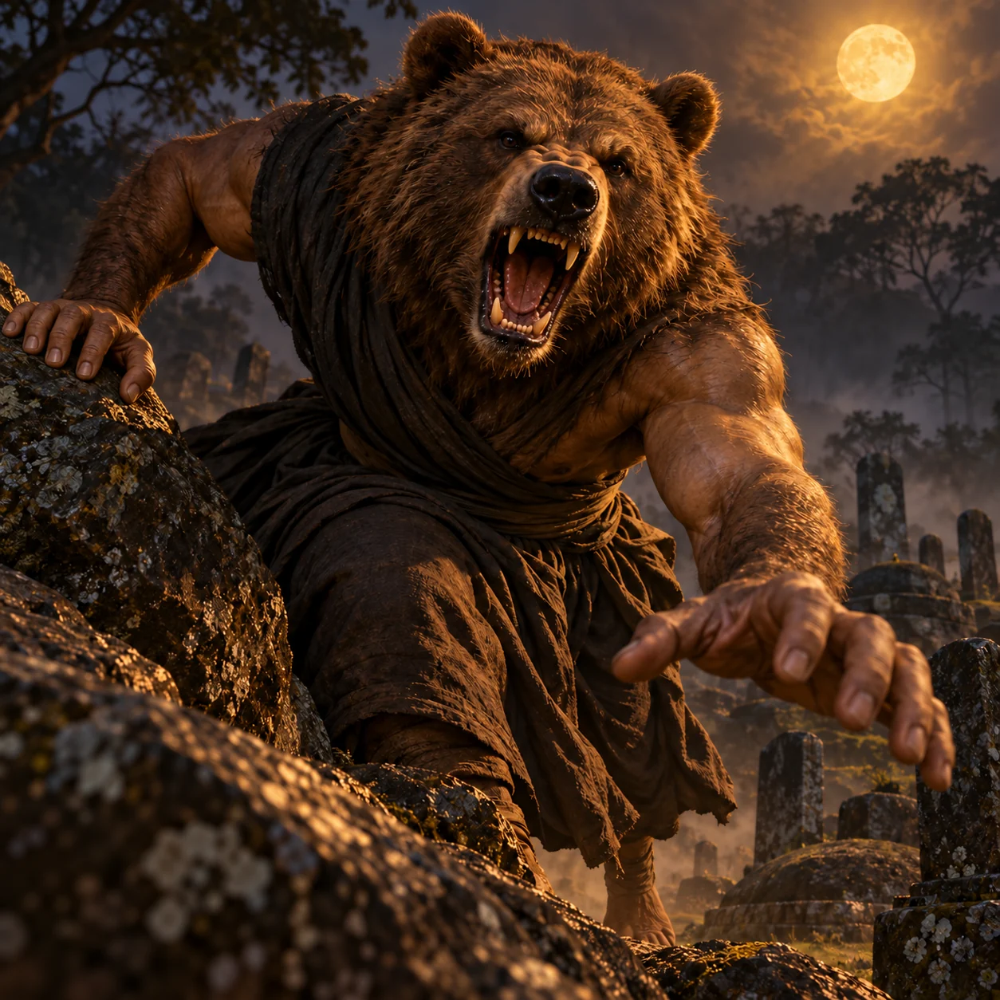
Maha Sona in the bear-headed revived warrior account
Aura: No generic aura. Presence comes from documented anatomy and action: maha-sona-c03, maha-sona-c04, maha-sona-c02, maha-sona-c06, maha-sona-c01.
Audit ciri dan sumber
- [object Object]
- [object Object]
- [object Object]
Native1254,200px and4x crops of BOTH HANDS inspected. Corrected upper-left rock hand now shows FOUR separate nail-bearing fingers over rock and ONE clearly opposed curved thumb at near-right rock side: exactly FIVE tips and FIVE nails, no sixth. Forward hand also thumb plus four fingers=FIVE. One living roaring bear head/two round ears/two eyes, two humanlike arms, two legs under opaque wrap/skirt. Lunge/rocks/moonlit graveyard and uninscribed stones visually preserved. No corpses, gore, weapons, aura or text. Backwards head optional detail not attempted. Seven Sangar checks pass.
Review sumberEDIT THE REFERENCED IMAGE. Change ONLY the HAND GRIPPING THE ROCK at UPPER LEFT, approximately native1254 x0-225,y350-535. Preserve bear head, roar, body, other reaching hand, clothes, lunge, moonlight, graveyard, rocks and all composition exactly. Do not change the face or head orientation.
Correct upper-left rock-gripping hand to EXACTLY FIVE NORMAL HUMANLIKE DIGITS: FOUR distinct fingers laid over the upper rock surface, each ending in exactly one visible nail, plus ONE clearly OPPOSED THUMB curved down to the near vertical side of the rock. Total FIVE digit tips and FIVE nails, not six. The thumb is beside/under the four fingers, clearly attached to the same palm. Space fingertips naturally so all five are countable, not hidden or merged. Remove the extra sixth finger completely. Keep skin tone, hand scale, anatomy, rock grip and amber rimlight.
Source maha-sona-c03/c04 revived humanlike warrior with bear head; ordinary five-digit humanlike hands. No new magic, no weapons, no corpse/gore, no extra limbs, text, annotations, labels, aura or borrowed designs. Full opaque clothing remains exactly as source image.
Majimun
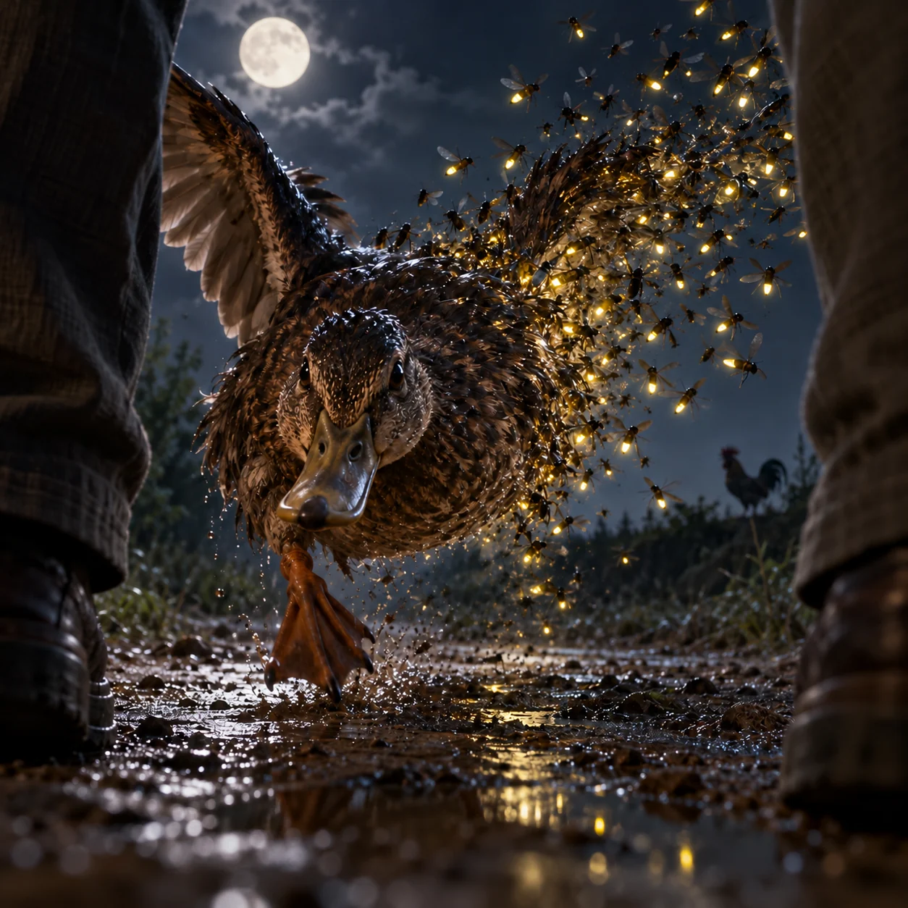
One-legged duck-shaped Afira-majimun becoming fireflies before disappearance
Aura: No generic aura. Presence comes from documented anatomy and action: majimun-c03, majimun-c02, majimun-c01.
Audit ciri dan sumber
- [object Object]
- [object Object]
- [object Object]
Native1254,200px and2x underside/foot crop inspected. Exactly ONE orange duck leg and ONE webbed foot slap mud at lower-left. Former image-right leg completely absent: continuous feathered underside above open air/mud, no hidden second foot, stump or wound. One duck head/two eyes/bill, wings and rear-body breakup into separate fireflies preserved, two adult trouser legs at edges, moon/calling rooster and wet path. c04 full Japanese quote now included in basis/anatomy requirement. Hopping lurch and impossible transformation remain uncanny at200. No monster teeth/horns, aura, text or gore. Seven Sangar checks pass.
Review sumberEDIT THE REFERENCED IMAGE. Correct ONLY duck LEG COUNT. Preserve duck head/two eyes/bill, wings and rear-body physical breakup into separate fireflies, two adult trouser legs at frame edges, rooster, moon, mud, composition, light and all other features.
The duck spirit MUST HAVE EXACTLY ONE LEG and ONE WEBBED FOOT: source majimun-c04 quote says 片脚のないアヒルの姿, form of a duck MISSING ONE LEG. KEEP the large forward webbed foot at IMAGE LEFT (native roughly x350-520,y760-960), slapping the mud. REMOVE ENTIRELY the other duck leg/foot on IMAGE RIGHT (roughly x580-710,y790-980). Replace its former attachment area on the underside of duck with CONTINUOUS INTACT FEATHERS; below it show empty space and wet mud through the gap. No stump, wound, blood, hidden second foot, tiny second toe, duplicated leg or extra limb. Make the missing-leg side visibly clear: duck hops forward on the single remaining foot, body tilted naturally with asymmetrical one-foot support. This is congenital/spirit one-legged anatomy, no injury scene.
Documented rear body and wing still dissolve physically into individually drawn fireflies [majimun-c03] while crossing between person's legs [majimun-c02]. Do not replace foot with fireflies: show it truly absent with feathers where leg would join body. At200px viewer must count ONE obvious orange webbed foot and see open empty space where a second would be.
No alterations to other scene features. No invented teeth, horns, monster face, aura, text, labels, gore or borrowed film/game/anime/comic design.
Manawydan fab Llŷr
Menunggu gambar yang lolos audit
Mande Barung
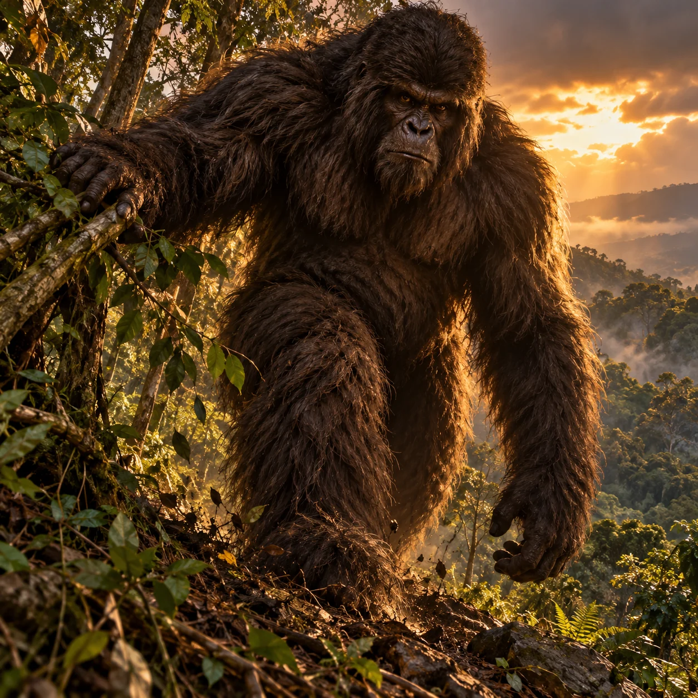
ONE huge bulky apelike hominoid with ONE head and TWO eyes, TWO arms and TWO legs; thick BLACKISH BROWN fur, distinctive cap-like dome of dense fur on head, NO actual hat; opaque fur conceals body. [mande-barung-c02,mande-barung-c04]
Aura: Distinctive documented anatomy mande-barung-c02,mande-barung-c04 and action mande-barung-c02,mande-barung-c04.
Audit ciri dan sumber
- [object Object]
- [object Object]
- [object Object]
Native and200px inspected: huge bulky bipedal apelike hominoid, blackishbrown thick hair and cap-like headfur c02/c04, twoarms/twolegs. One hand partsbranch while strides down forest bank, no quadrupedal ordinaryape pose; GaroHills habitat c01. Imposing subject200px, no aura/text/gore. All seven Sangar checks pass.
Review sumberONE original square premium painterly cinematic Mitoloka illustration of Mande Barung, the alleged huge hairy bipedal hominoid of Meghalaya.
ANATOMY: ONE huge bulky apelike hominoid with ONE head and TWO eyes, TWO arms and TWO legs; thick BLACKISH BROWN fur, distinctive cap-like dome of dense fur on head, NO actual hat; opaque fur conceals body. [mande-barung-c02,mande-barung-c04]
MOMENT: Stride down a forest bank toward viewer, one thick hand pushes a broad branch aside, stern intent stare, hunched bulky shoulders.
POWER: No supernatural effects or invented diet/action; physical movement brushes leaves and kicks ordinary soil only. [mande-barung-c02,mande-barung-c04]
SCALE & CAMERA: extreme low close angle, subject fills80% of square; natural scale unless giant explicitly documented. Important features clear at200pixels.
LIGHT & WEATHER: one dominant warm moonbreak/sunset or storm gap, strong rim light, deep walnut shadows, ordinary physical dust/moisture.
SURFACE: tactile natural fur/skin/scales where appropriate, coarse opaque textiles, rough stone, original visible painterly brushwork.
SETTING: Garo Hills forest in Meghalaya, normal-sized trees show huge bulky body. [mande-barung-c01]
MOOD: dangerous for hostile beings, awe-inspiring and respectful for gods/guardians, uncanny audacious for benign small spirits, never cute/calm/decorative.
HARD CONSTRAINTS: no text/lettering/logo/border/frame/watermark; no extra heads/limbs/fingers; no borrowed film/game/anime/comic design; no nudity or explicit gore; no generic glow aura, neon outlines, energy ribbons, floating runes.
Maria da manta
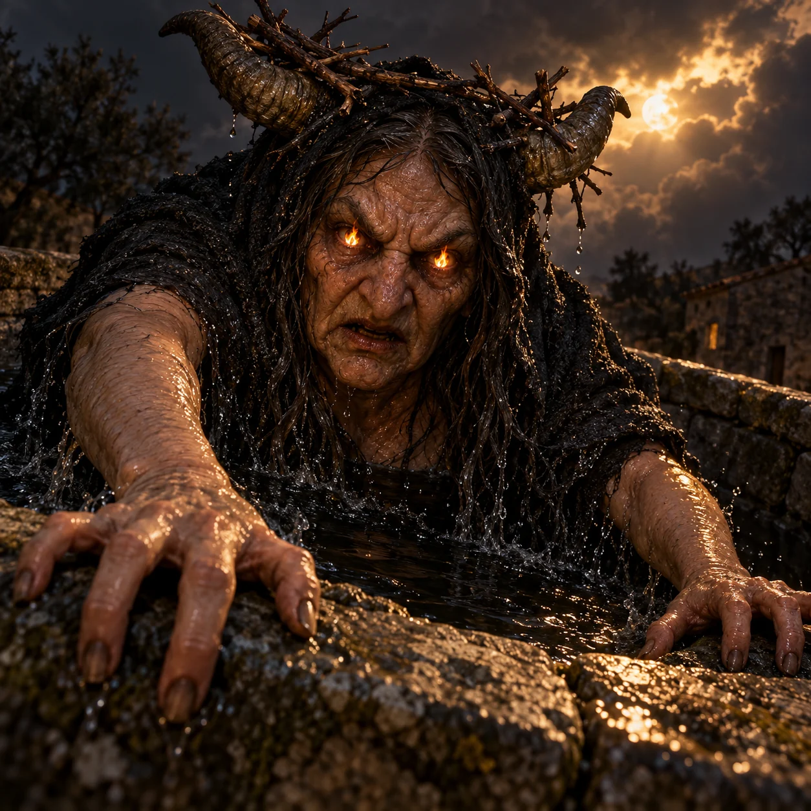
ONE very ugly adult woman monster head with TWO HORNS and TWO eyes containing actual small FIRE FLAMES; firewood twigs caught across her horns; TWO arms with ordinary human hands, body below chest hidden in black wellwater; fully opaque dark coarse shawl. [maria-da-manta-c01,maria-da-manta-c06,maria-da-manta-c08]
Aura: Distinctive documented anatomy maria-da-manta-c01,maria-da-manta-c06,maria-da-manta-c08 and action maria-da-manta-c01,maria-da-manta-c06.
Audit ciri dan sumber
- [object Object]
- [object Object]
- [object Object]
Native and200px inspected: one ugly woman's head, twohorns withfirewood, exactly two fiery eyes c01/c06/c08. Twoordinary hands grip wellrim as emerges blackwater c01, opaque shawl. Flames localized inside eyes documented, no generic aura; threatening close action200px no extra limbs/text/gore. All seven Sangar checks pass.
Review sumberONE original square premium painterly cinematic Mitoloka illustration of Maria da manta, the horned fiery-eyed water monster of Portuguese folklore.
ANATOMY: ONE very ugly adult woman monster head with TWO HORNS and TWO eyes containing actual small FIRE FLAMES; firewood twigs caught across her horns; TWO arms with ordinary human hands, body below chest hidden in black wellwater; fully opaque dark coarse shawl. [maria-da-manta-c01,maria-da-manta-c06,maria-da-manta-c08]
MOMENT: Rise abruptly from a deep stone well and reach both hands over its rim toward viewer, fiery eyes staring directly, horns and firewood silhouetted.
POWER: Fire burns IN eyes as documented, no surrounding aura; emerging body physically splashes wellwater; no victims shown. [maria-da-manta-c01,maria-da-manta-c06]
SCALE & CAMERA: extreme low close angle, subject fills80% of square; natural scale unless giant explicitly documented. Important features clear at200pixels.
LIGHT & WEATHER: one dominant warm moonbreak/sunset or storm gap, strong rim light, deep walnut shadows, ordinary physical dust/moisture.
SURFACE: tactile natural fur/skin/scales where appropriate, coarse opaque textiles, rough stone, original visible painterly brushwork.
SETTING: Portuguese stone well with black water at night, creature fills close frame. [maria-da-manta-c01]
MOOD: dangerous for hostile beings, awe-inspiring and respectful for gods/guardians, uncanny audacious for benign small spirits, never cute/calm/decorative.
HARD CONSTRAINTS: no text/lettering/logo/border/frame/watermark; no extra heads/limbs/fingers; no borrowed film/game/anime/comic design; no nudity or explicit gore; no generic glow aura, neon outlines, energy ribbons, floating runes.
Marranghino
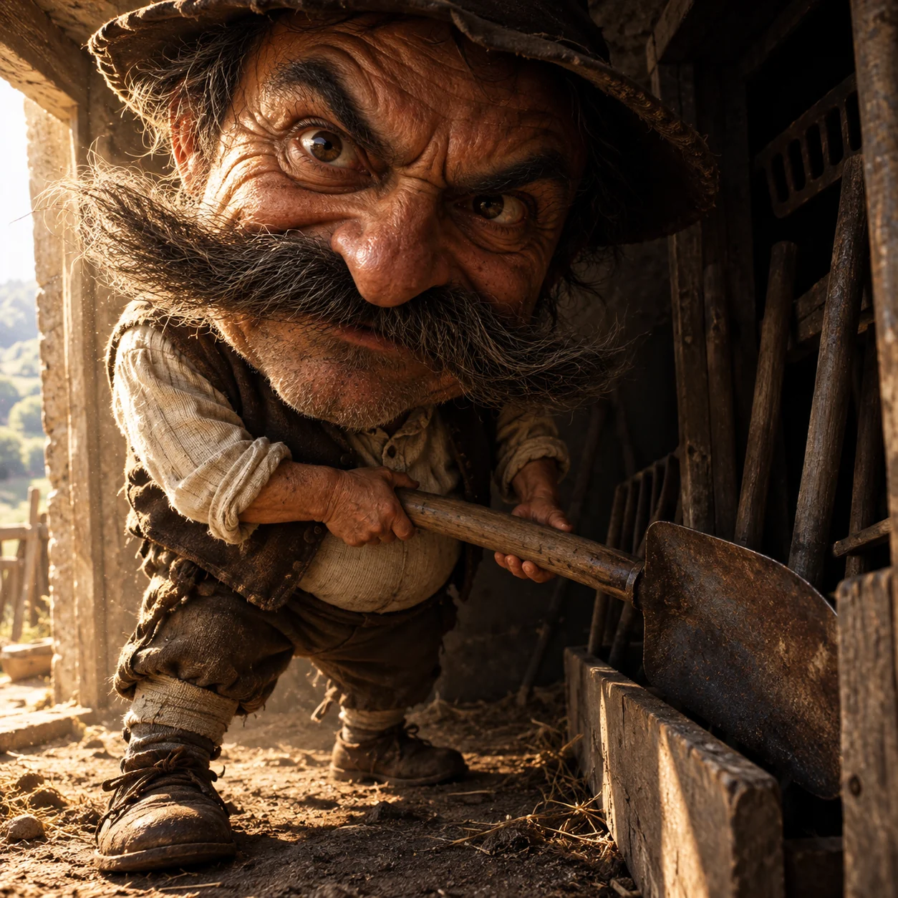
ONE VERY SHORT male humanoid with disproportionately BIG HEAD, thick MOUSTACHE, rounded POT BELLY, TWO arms and TWO legs, opaque rough rural tunic/trousers; no horns/pointed ears/claws or spider limbs. [marranghino-c04]
Aura: Distinctive documented anatomy marranghino-c04 and action marranghino-c05,marranghino-c06.
Audit ciri dan sumber
- [object Object]
- [object Object]
- [object Object]
Native and200px inspected: veryshort potbelly bighead moustached male c04, twoarms/twolegs, opaque clothes. Enormous disproportionate head and confrontational knowing stare give uncanny imposing presence without making harmless prankster evil. Hides normal human spade c06, active movement and extreme close camera; no magic/text/gore. All seven Sangar checks pass.
Review sumberONE original square premium painterly cinematic illustration of Marranghino, the harmless prankster house spirit of Lucania.
ANATOMY: ONE VERY SHORT male spirit, disproportionately enormous HEAD, huge thick MOUSTACHE, stout POT-BELLY, TWO arms/TWO legs, fully opaque coarse old rural clothing, ordinary human ears/no horns/fangs/claws [marranghino-c04].
MOMENT: Drag a normal human-sized spade into a black farm-tool recess while leaning his unusually large head extremely CLOSE to viewer, look directly into viewer eyes with a deeply knowing challenging crooked grin, eyebrows lowered, wide intense eyes. The spirit's huge face and moustache fill upper60% of square; potbelly, two small hands gripping spade and two short stepping legs visible below. He is not evil and not hurting anyone: mischievous and commanding, an uncanny ancient house presence with audacity, never cute toy/mascot or ordinary dwarf portrait.
POWER: no magic invented. He physically hides farmer tool [marranghino-c05,marranghino-c06]. Spade blade normal size exceeds his torso and confirms very small stature.
CAMERA: extreme low camera within arm's reach of face, foreshortened enormous head, tool and doorway close, no enlarging body beyond documented tiny size.
LIGHT: single narrow low sidebeam into shed lights one intense eye and moustache; deep black/walnut shadow across other face, strong warm rim, ordinary floating dust.
SURFACE: aged rough face, coarse bristly moustache, frayed linen, rusted spade and weathered wood.
SETTING: Lucanian farm tool shed during field work [marranghino-c01,marranghino-c06].
HARD CONSTRAINTS: no cute/cartoon/pastel expression, no harmful evil behavior, no text/lettering/logo/border/watermark, no aura or magic, no extra limbs, no nude/gore, no copiedfilm/game/anime design.
Matuku-tangotango
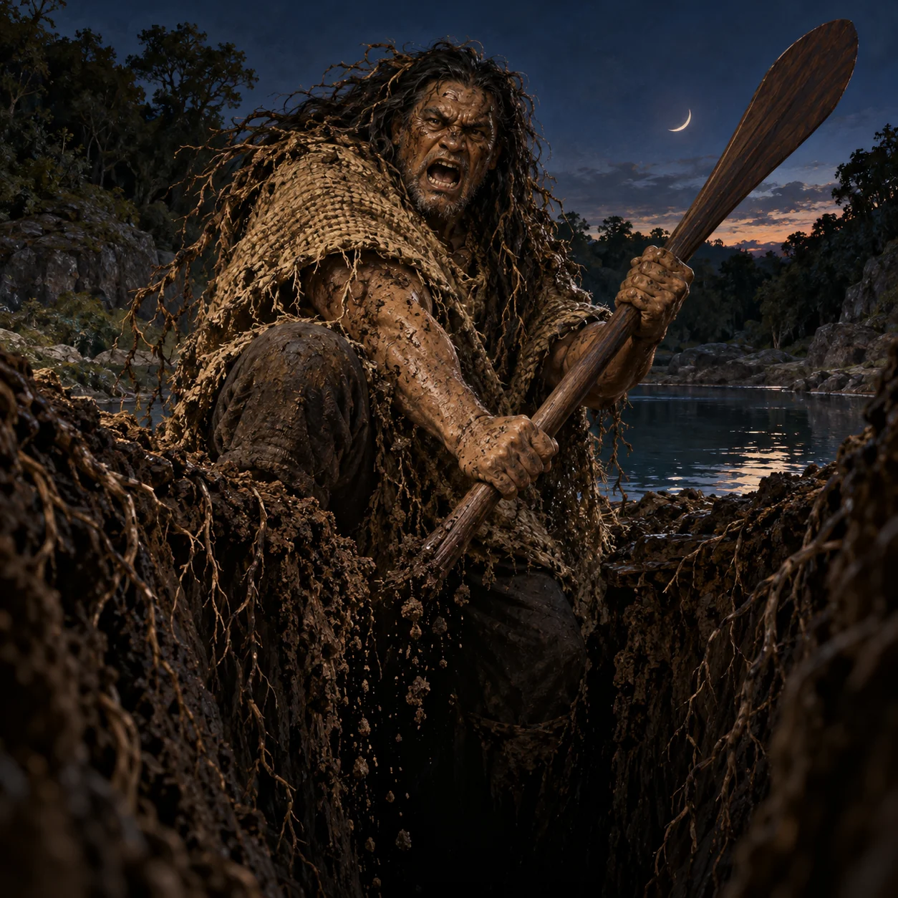
Painterly earth-caked ogre-chief climbs from a visibly deep black shaft at first new-moon crescent, both hands gripping one plain paddle-edged hardwood striking weapon.
Aura: Menace comes from literal c06/c07 emergence from deep underground c09 and two-handed wood weapon c07, no aura or invented anatomy.
Audit ciri dan sumber
- [object Object]
- [object Object]
- [object Object]
Native1254 and200 inspected: one humanlike ogre-chief with long dark hair c04, earth-caked ancient weathered features, two eyes, roaring mouth with ordinary teeth, no invented horns/fangs/claws or giant scale. Opaque flax cloak and closed lower garment. BOTH hands clearly grip the same uninterrupted dark hardwood shaft at separated positions; plain long flat paddle-edged weapon has NO crossguard, pommel or metal, interpretation c07 per Claude correction. One knee at rim, other leg descends into a DEEP black vertical shaft whose rooted soil walls continue into darkness; soil/roots fall from hair/cloak c06/c07/c09. Washing pool behind c03 and thin first crescent editorial for new-moon appearance c06. Rooted subterranean emergence and confrontation readable200, no ordinary shallow ditch or Western sword. No victim/text/aura/gore. Seven Sangar checks pass; full old Claude receipt archived alongside old PNG.
Review sumberONE original square premium PAINTERLY cinematic Mitoloka illustration of Matuku-tangotango, the legendary ogre-chief who rises from beneath the earth at the appearing new moon carrying a two-handed wooden weapon.
ANATOMY: ONE humanlike male ogre-chief, ONE head, TWO eyes, TWO arms and TWO legs. Long dark hair tangled with real fine roots and falling soil. Ancient grave EARTH-CAKED weathered face rendered in broad expressive PAINT strokes, drawn legendary features rather than photographic portrait of a present-day person. Mouth open in a fearsome roar, ordinary human teeth only. Opaque plain woven FLAX CLOAK over closed opaque dark lower garment. No invented horns, fangs, claws, extra eyes, tattoos or giant size. [matuku-tangotango-c04,matuku-tangotango-c05,matuku-tangotango-c09]
MOMENT: HEAVE his upper body up OUT OF A DEEP BLACK UNDERGROUND VERTICAL SHAFT. One knee braces its rough rim; other covered leg remains inside descending into blackness. BOTH HANDS clearly GRIP THE SAME LONG WOODEN SHAFT of his weapon, one fist near waist and the other at chest height, a visible length of shaft separates them. He lifts it diagonally ready to strike toward viewer. Both hands and both wrists are completely visible and uncrossed. Real roots trail from shoulders and hair, dirt streams down from cloak into the abyss. [matuku-tangotango-c06,matuku-tangotango-c07]
WEAPON: ONE long two-handed PLAIN DARK HARDWOOD Māori-form striking weapon; simple LONG straight staff with a broad flat elongated PADDLE-EDGED end and continuous integral wooden handle. Smooth flat woodgrain, no separate hilt or metal fittings. Absolutely NO CROSSGUARD, NO POMMEL, NO European sword silhouette. Both hands grip around its narrow plain central shaft. This is interpretation of the source two-handed wooden sword, not a steel sword. [matuku-tangotango-c07]
POWER: No earth magic or aura. Physical emergence from subterranean dwelling is the uncanny action, with earth and roots dragged naturally upward by his climb. [matuku-tangotango-c06,matuku-tangotango-c07,matuku-tangotango-c09]
SCALE & CAMERA: low close camera at ground level across the open shaft rim; subject fills upper two-thirds, DEEP SHAFT fills foreground lower third, black sheer soil walls with cut roots descend far below him into total darkness. A proper cavernous underground opening, NEVER a shallow ditch. Face and both weapon-gripping hands dominate, weapon angled beside the face without hiding either hand. Human scale.
LIGHT & WEATHER: dark early night with one TINY VERY THIN waxing crescent low in dark dusk sky, editorial first visible new-moon appearance. Last light reflected from washing pool rakes upward onto earth-caked brow, hair and wood, deep walnut-black shadows. No full moon, no bright day. [matuku-tangotango-c03,matuku-tangotango-c06]
SURFACE: visible premium hand-painted brushwork across every surface, aged clay-caked skin, wet coarse flax, roots, falling soil, plain dark woodgrain; no photographic skin rendering.
SETTING: the shaft opening of Putawarenuku underground cave beside his dark washing pool, distant forest kept secondary. Pool visible just beyond rim. [matuku-tangotango-c02,matuku-tangotango-c03,matuku-tangotango-c09]
MOOD: terrifying legendary creature forcing itself from the underground world into ours, grave and predatory, never ordinary man in a ditch or present-day warrior portrait.
HARD CONSTRAINTS: NO crossguard, pommel, metal, European sword, ornate weapon carving, tattoos or sacred emblems. No victim, human flesh, blood, gore or nudity; fully opaque garments. No invented monstrous anatomy, giant scale, text, lettering, logo, frame, watermark, generic aura, glowing eyes, neon or energy ribbons. No extra heads/limbs/fingers; no borrowed film/game/anime design.
Mazoku
Menunggu gambar yang lolos audit
Mbói Tu'ĩ
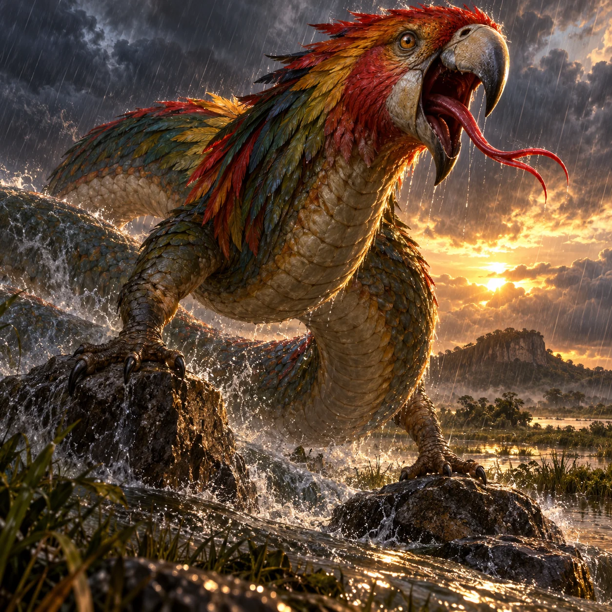
ONE PARROT HEAD with curved beak, TWO eyes, long RED FORKED TONGUE; long scaled SERPENT BODY with feathers only on head/back; EXACTLY TWO short LEGS attached near torso, each ending birdlike foot. NO wings, NO forearms, NO extra legs. [mboi-tu-i-c05,mboi-tu-i-c08,mboi-tu-i-c13]
Aura: Distinctive documented anatomy mboi-tu-i-c05,mboi-tu-i-c08,mboi-tu-i-c13 and action mboi-tu-i-c06.
Audit ciri dan sumber
- [object Object]
- [object Object]
- [object Object]
Native and200px inspected: one parrot head curvedbeak, long RED FORKED tongue, serpent scaledbody with head/back feathers, exactly2legs clutchingrocks and no wings c05. Colossal c08/c13, stormrain c06, wetlandrocks c11. Imposing guardian action200px; no illnessvictims, text/aura/gore/extra limbs. All seven Sangar checks pass.
Review sumberONE original square premium painterly cinematic Mitoloka illustration of Mbói Tu'ĩ, the colossal Guaraní serpent-parrot guardian of wetlands.
ANATOMY: ONE PARROT HEAD with curved beak, TWO eyes, long RED FORKED TONGUE; long scaled SERPENT BODY with feathers only on head/back; EXACTLY TWO short LEGS attached near torso, each ending birdlike foot. NO wings, NO forearms, NO extra legs. [mboi-tu-i-c05,mboi-tu-i-c08,mboi-tu-i-c13]
MOMENT: Rear from great marsh, two feet clutch separate rocks, parrot beak open with forked red tongue visible, serpent coils thrust forward.
POWER: Heavy storm rain moves across wetland as documented storm calling; body displaces real water; no aura, illness depicted or invented lightning attack. [mboi-tu-i-c06]
SCALE & CAMERA: extreme low close angle, subject fills80% of square; natural scale unless giant explicitly documented. Important features clear at200pixels.
LIGHT & WEATHER: one dominant warm moonbreak/sunset or storm gap, strong rim light, deep walnut shadows, ordinary physical dust/moisture.
SURFACE: tactile natural fur/skin/scales where appropriate, coarse opaque textiles, rough stone, original visible painterly brushwork.
SETTING: Great marsh and rocks/crags near Tobatí and Cavaju hill. [mboi-tu-i-c08,mboi-tu-i-c11]
MOOD: dangerous for hostile beings, awe-inspiring and respectful for gods/guardians, uncanny audacious for benign small spirits, never cute/calm/decorative.
HARD CONSTRAINTS: no text/lettering/logo/border/frame/watermark; no extra heads/limbs/fingers; no borrowed film/game/anime/comic design; no nudity or explicit gore; no generic glow aura, neon outlines, energy ribbons, floating runes.
Medo
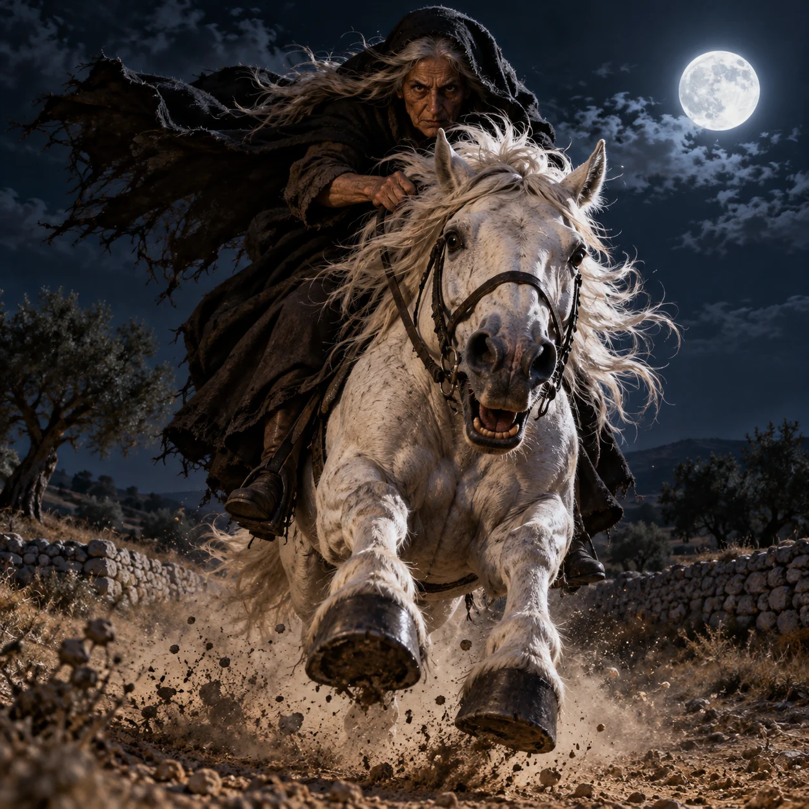
The old woman of the white mare, midnight Medo apparition
Aura: No generic aura. Presence comes from documented anatomy and action: medo-c06, medo-c07, medo-c02, medo-c03.
Audit ciri dan sumber
- [object Object]
- [object Object]
- [object Object]
Native1254 and200px inspected. One fierce elderly rider in fully opaque dark cloak/dress, two boots straddling one white mare. One horse head/two ears/two eyes, two distinct forelegs thrust at viewer with hind legs behind/partly occluded in gallop, no duplicate head or extra limbs. Tight ground-level charge, hoofbeat dust, flowing mane and challenging face convey midnight terror c06/c07 at200. Algarve field context, moonlight, no invented spectral anatomy or magical effect. No aura, text or gore. Seven Sangar checks pass; documented human/horse appearance relies on aggressive action and framing.
Review sumberONE original square premium painterly cinematic Mitoloka illustration of Medo, the old woman of the white mare, a terrifying midnight apparition in Algarve [medo-c01,c06,c07].
ANATOMY: ONE elderly female rider with ONE human head, TWO eyes, TWO arms, TWO legs, fully opaque rough dark cloak and ankle-length dress; ONE living white mare with ONE horse head, TWO eyes, TWO ears and FOUR horse legs, ordinary horse anatomy, no horns or wings [medo-c06,c07]. Rider's old angular face half-shadowed, fierce direct stare and tight grim mouth. No witch hat, magical staff, skeleton anatomy or invented spectral transparent body.
MOMENT: CHARGE STRAIGHT DOWN toward the viewer at midnight: white mare rears into a surging forward gallop at extremely close range, two forehooves thrust forward clearly separate, hind legs kicking dust below, rider bent forward gripping mane with both hands and glaring down. Whipped cloak and mane, wide nostrils and open horse mouth express the documented infernal din. The rider and horse dominate, not picturesque countryside [medo-c06,c07].
POWER: No depicted magic, aura or supernatural beams; the frightening rushing apparition and hoofbeat dust convey the midnight terror and infernal din of the account [medo-c06,c07].
SCALE & CAMERA: ground-level extreme low angle immediately in front of oncoming mare, horse head and rider face large and clear, forehooves bottom foreground. No giant size.
LIGHT & WEATHER: One hard full moon from side illuminates chalk-white horse face, old woman's tense face and dust edges; deep walnut shadows and high contrast. Fine summer moonlit night [medo-c03,c06].
SURFACE: tactile rough white horse coat, damp nostrils, tangled mane, weathered opaque cloth, dry dusty earth.
SETTING: Empty Algarve fields at the stroke of midnight, low field wall and distant small olive silhouettes, field horizon kept narrow [medo-c02,c03,c06,c07].
MOOD: immediately threatening galloping midnight apparition, never ordinary peaceful woman on a horse; fear through aggressive framing and action, not invented anatomy.
HARD CONSTRAINTS: no text, lettering, pseudoletters, logo, border, watermark, gore or nudity; no extra heads, limbs or digits; no copyrighted film/game/anime/comic design; no generic glowing aura, neon outlines, energy ribbons or floating runes.
Mikelats
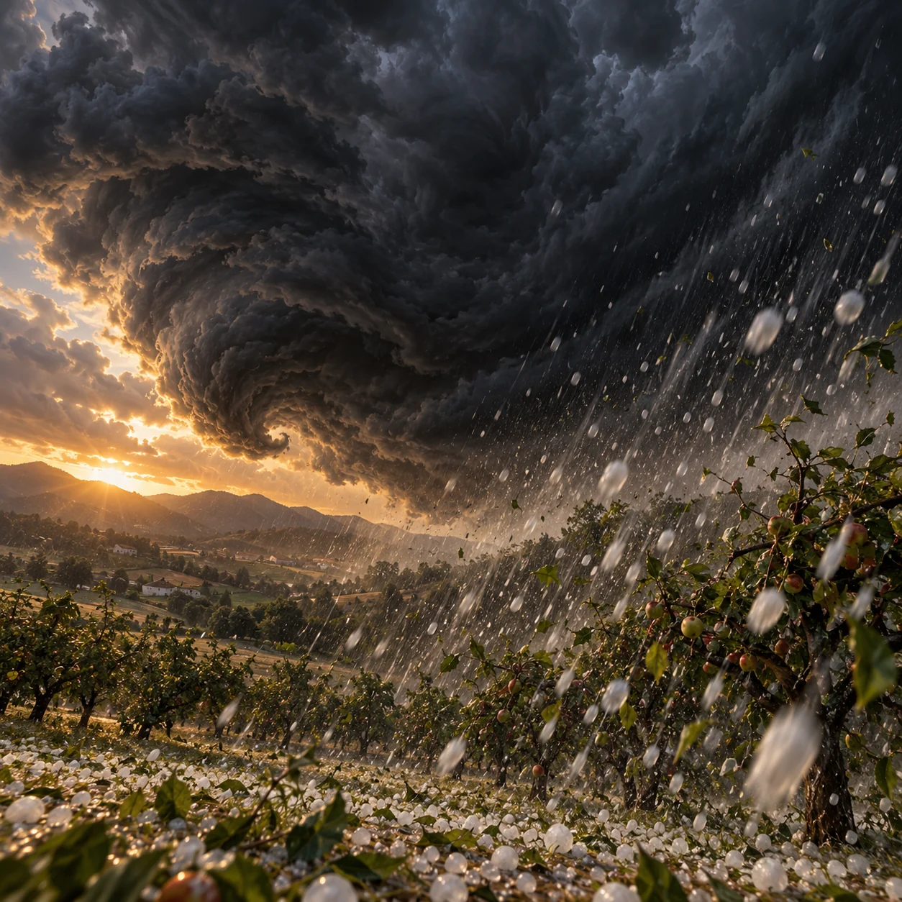
NO humanoid body, NO face, NO eyes; the being IS ONE overwhelming dark active STORM CLOUD with a distinct curling downward mass, as Hodei/Odei manifestation. [mikelats-c04]
Aura: Distinctive documented anatomy mikelats-c04 and action mikelats-c01,mikelats-c02,mikelats-c04.
Audit ciri dan sumber
- [object Object]
- [object Object]
- [object Object]
Native and200px inspected: overwhelming curling cloud itself as documented Hodei/Odei form c04, no invented anthropomorphic face. Dense hail actively strips orchard leaves and coats ground c01/c02/c04; storm occupies mostframe and action reads dangerous200px. Manifestation deliberately replaces unsupported humanoid, not calm landscape. No aura/text/gore. All seven Sangar checks pass.
Review sumberONE original square premium painterly cinematic Mitoloka illustration of Mikelats, the Basque storm spirit manifest as Hodei the cloud.
ANATOMY: NO humanoid body, NO face, NO eyes; the being IS ONE overwhelming dark active STORM CLOUD with a distinct curling downward mass, as Hodei/Odei manifestation. [mikelats-c04]
MOMENT: Descend as a massive low stormfront over viewer, cloud rotates and drives a dense diagonal barrage of hailstones into orchard below.
POWER: Large real hailstones strip leaves and batter fruit trees and grainfields; documented destructive storms/hail, NO face hidden in cloud, NO aura or lightning needed. [mikelats-c01,mikelats-c02,mikelats-c04]
SCALE & CAMERA: extreme low close angle, subject fills80% of square; natural scale unless giant explicitly documented. Important features clear at200pixels.
LIGHT & WEATHER: one dominant warm moonbreak/sunset or storm gap, strong rim light, deep walnut shadows, ordinary physical dust/moisture.
SURFACE: tactile natural fur/skin/scales where appropriate, coarse opaque textiles, rough stone, original visible painterly brushwork.
SETTING: Basque orchards and fields under a violent dark hailstorm, cloud occupies75% of image and physically acts. [mikelats-c02,mikelats-c04]
MOOD: dangerous for hostile beings, awe-inspiring and respectful for gods/guardians, uncanny audacious for benign small spirits, never cute/calm/decorative.
HARD CONSTRAINTS: no text/lettering/logo/border/frame/watermark; no extra heads/limbs/fingers; no borrowed film/game/anime/comic design; no nudity or explicit gore; no generic glow aura, neon outlines, energy ribbons, floating runes.
Miming
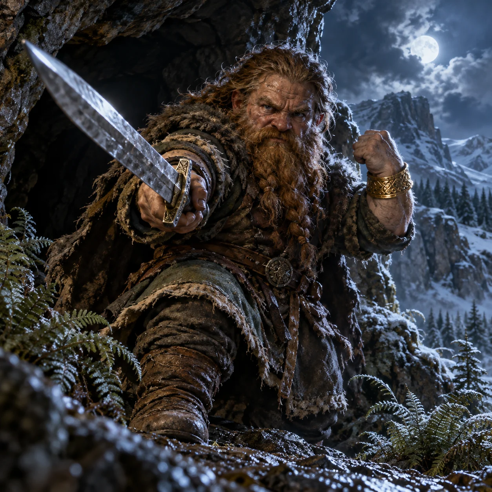
ONE very SHORT adult male DWARF with ONE human head, TWO eyes, TWO arms, TWO legs; fully opaque weathered forest garments, no horns/goatlegs/pointedears. ONE keen straight iron SWORD in right hand, ONE thick gold BRACELET clearly on left wrist. [miming-c01,miming-c04]
Aura: Distinctive documented anatomy miming-c01,miming-c04 and action miming-c01,miming-c04.
Audit ciri dan sumber
- [object Object]
- [object Object]
- [object Object]
Native1254 and200 inspected: short stout dwarf from cave c02/c04, one head/two eyes/two arms/two legs, opaque clothes; one keen sword thrust toward viewer c01/c04, one gold bracelet clear on raised opposite wrist c01. Defensive fierce action and readable sword dominate at200; no goat legs/horns, invented powers, generic aura, text/gore or ordinary passerby. Seven Sangar checks pass.
Review sumberONE original square premium painterly cinematic Mitoloka illustration of Miming, the woodland dwarf guardian of the keen sword that could pierce Balder.
ANATOMY: ONE very SHORT adult male DWARF with ONE human head, TWO eyes, TWO arms, TWO legs; fully opaque weathered forest garments, no horns/goatlegs/pointedears. ONE keen straight iron SWORD in right hand, ONE thick gold BRACELET clearly on left wrist. [miming-c01,miming-c04]
MOMENT: Emerge fiercely from cave shadow with sword thrust diagonally toward viewer, left forearm raised so gold bracelet catches light; dwarf-small beside normal ferns.
POWER: No magical glow or coins multiplying, weapons are documented precious objects; menace from sharp steel and defensive stance. [miming-c01,miming-c04]
SCALE & CAMERA: extreme low close angle, subject fills80% of square; natural scale unless giant explicitly documented. Important features clear at200pixels.
LIGHT & WEATHER: one dominant cold moonlight through a gap in the clouds, strong rim light, deep walnut shadows, ordinary physical dust/moisture.
SURFACE: tactile natural fur/skin/scales where appropriate, coarse opaque textiles, rough stone, original visible painterly brushwork.
SETTING: Woodland cave amid frozen ridges, normal human-sized cave and ferns establish small stature. [miming-c02]
MOOD: dangerous for hostile beings, awe-inspiring and respectful for gods/guardians, uncanny audacious for benign small spirits, never cute/calm/decorative.
HARD CONSTRAINTS: no text/lettering/logo/border/frame/watermark; no extra heads/limbs/fingers; no borrowed film/game/anime/comic design; no nudity or explicit gore; no generic glow aura, neon outlines, energy ribbons, floating runes.
Mistapew
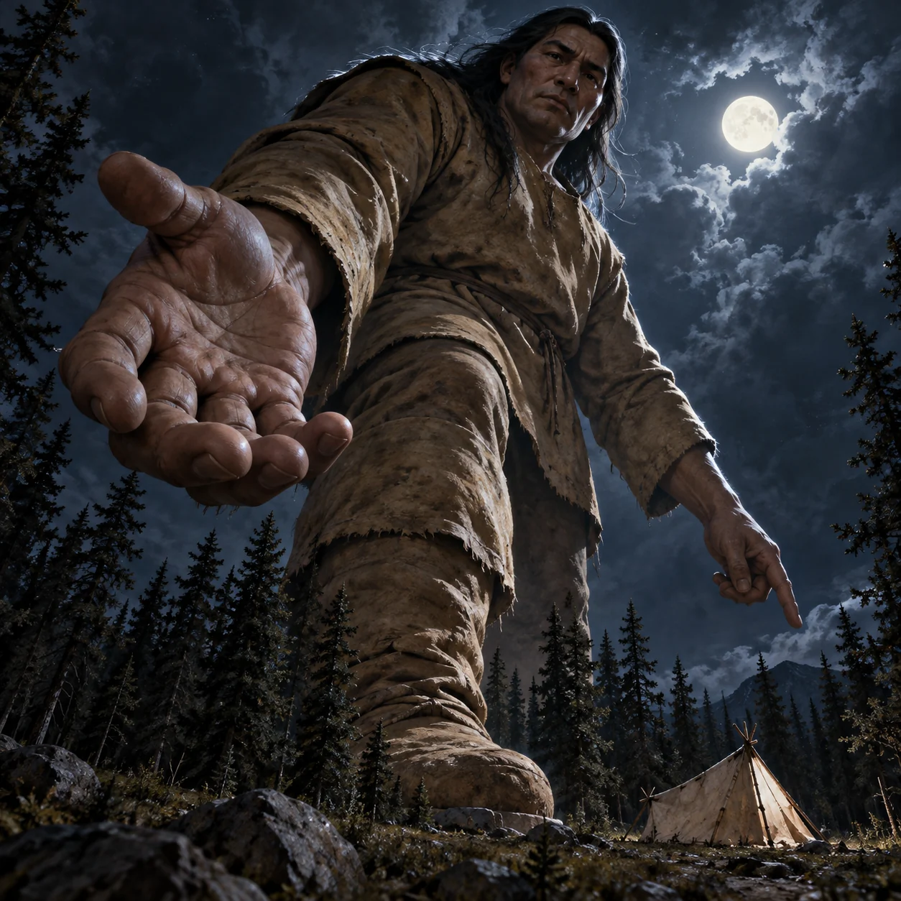
ONE very large GIANT adult HUMAN MAN with ONE head, TWO eyes, TWO arms and TWO legs; fully opaque simple unmarked hide tunic and leggings, no invented fur-body/antlers/claws/mask/headdress. [mistapew-c03,mistapew-c13]
Aura: Distinctive documented anatomy mistapew-c03,mistapew-c13 and action mistapew-c04,mistapew-c05,mistapew-c13.
Audit ciri dan sumber
- [object Object]
- [object Object]
- [object Object]
Native1254 and200 inspected: giant male spirit c03/c13 towers far above trees with tiny tent by ankle, one head/two eyes/two arms/two legs, plain fully opaque hide garments. Open five-digit hand extended in alliance c04, opposite hand points toward tent contextualizing master role c05/c10. Colossal scale and active address read awe-inspiring at200; no invented monster traits, sacred patterns, prophecy effects, soul-orbs, text/aura/gore. Seven Sangar checks pass with respectful ally interpretation.
Review sumberONE original square premium painterly cinematic Mitoloka illustration of Mistapew, the great spirit-helper described as a giant in a Cree star story.
ANATOMY: ONE very large GIANT adult HUMAN MAN with ONE head, TWO eyes, TWO arms and TWO legs; fully opaque simple unmarked hide tunic and leggings, no invented fur-body/antlers/claws/mask/headdress. [mistapew-c03,mistapew-c13]
MOMENT: Lean down from a VAST towering height toward the low viewer, extend one huge open empty hand as a formidable wise spirit ally, other hand gestures toward a small plain tent far below. His head and shoulders loom above forest tree crowns; a tiny adult-sized unmarked hide tent next to his feet is scarcely as tall as his ankle.
POWER: No invented prophecy beams or captured visible soul-orbs; imposing giant agency and wise intense gaze only. [mistapew-c04,mistapew-c05,mistapew-c13]
SCALE & CAMERA: extreme low close angle, subject fills80% of square; natural scale unless giant explicitly documented. Important features clear at200pixels.
LIGHT & WEATHER: one dominant cold moonlight through a gap in the clouds, strong rim light, deep walnut shadows, ordinary physical dust/moisture.
SURFACE: tactile natural fur/skin/scales where appropriate, coarse opaque textiles, rough stone, original visible painterly brushwork.
SETTING: Dark northern forest clearing, enormous giant visibly above normal tree crowns, one tiny ordinary tent by his feet. Tent contextualizes documented master of shaking tent; do not depict interior ceremony or add ritual symbols, patterns or sacred designs. [mistapew-c05,mistapew-c10]
MOOD: dangerous for hostile beings, awe-inspiring and respectful for gods/guardians, uncanny audacious for benign small spirits, never cute/calm/decorative.
HARD CONSTRAINTS: no text/lettering/logo/border/frame/watermark; no extra heads/limbs/fingers; no borrowed film/game/anime/comic design; no nudity or explicit gore; no generic glow aura, neon outlines, energy ribbons, floating runes.
Mo-sin-a
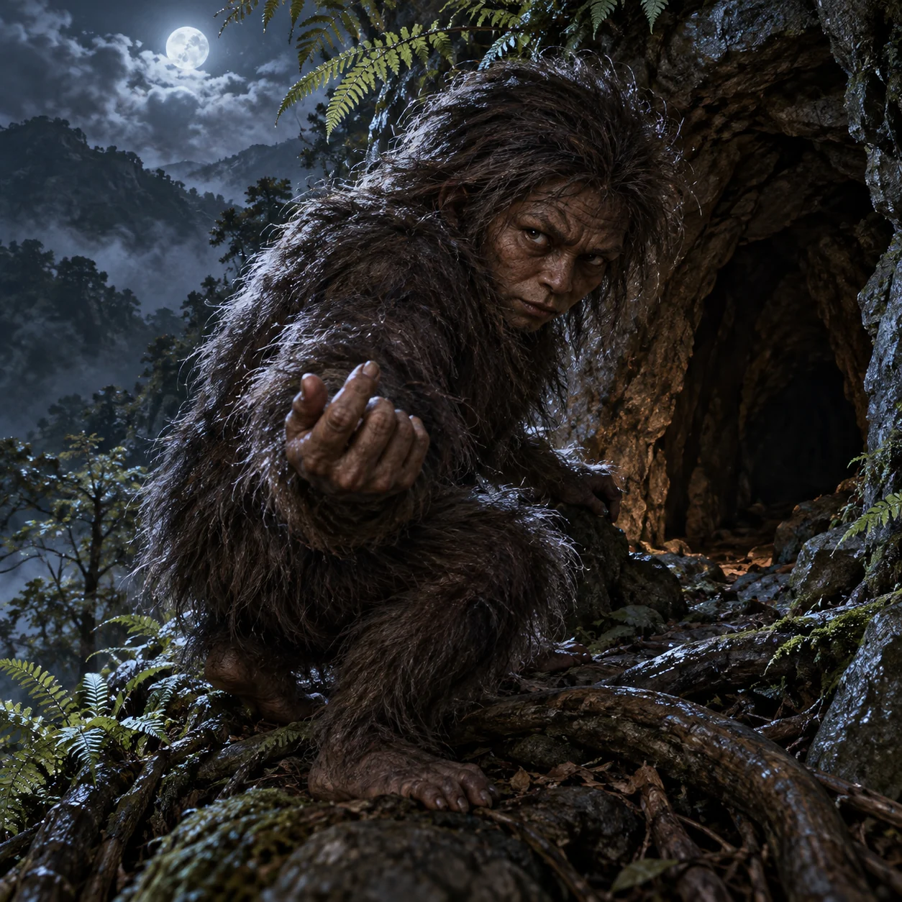
ONE very SHORT HAIRY humanlike creature with ONE head, TWO eyes, TWO arms and TWO legs, dense dark fur, adult humanlike face, no pointed ears/horns/fangs; opaque matted fur hides body. [mo-sin-a-c01]
Aura: Distinctive documented anatomy mo-sin-a-c01 and action mo-sin-a-c02,mo-sin-a-c05.
Audit ciri dan sumber
- [object Object]
- [object Object]
- [object Object]
Native1254,200 and foot crop inspected: small densely hairy humanlike spirit c01, one head/two eyes/two arms/two legs, opaque matted hair conceals body, front foot has five toes. Five-digit beckoning hand and wary adult face lure viewer toward mountain cave c02/c05; tiny scale relative ferns, no giant size. Uncanny intent reads at200, no cute pet look, horns/extra limbs/transformation visuals/text/aura/gore. Seven Sangar checks pass.
Review sumberONE original square premium painterly cinematic Mitoloka illustration of Mo-sin-a, the small hairy humanlike mountain spirit of Taiwan that lures travellers away.
ANATOMY: ONE very SHORT HAIRY humanlike creature with ONE head, TWO eyes, TWO arms and TWO legs, dense dark fur, adult humanlike face, no pointed ears/horns/fangs; opaque matted fur hides body. [mo-sin-a-c01]
MOMENT: Crouch on a tree root and beckon viewer with one bent hand while backing toward a cave, narrow intense ordinary eyes and a secretive predatory expression, lowered brow and taut lips. NO huge baby eyes, no round cute face, no grin or pet-like pose.
POWER: No transformation effects invented; documented beckoning/luring into remote mountain forest and caves, ordinary mist only. [mo-sin-a-c02,mo-sin-a-c05]
SCALE & CAMERA: extreme low close angle, subject fills80% of square; natural scale unless giant explicitly documented. Important features clear at200pixels.
LIGHT & WEATHER: one dominant cold moonlight through a gap in the clouds, strong rim light, deep walnut shadows, ordinary physical dust/moisture.
SURFACE: tactile natural fur/skin/scales where appropriate, coarse opaque textiles, rough stone, original visible painterly brushwork.
SETTING: Taiwan mountain forest and cave mouth, normal fern fronds above its shoulders establish very small size. [mo-sin-a-c02,mo-sin-a-c05]
MOOD: dangerous for hostile beings, awe-inspiring and respectful for gods/guardians, uncanny audacious for benign small spirits, never cute/calm/decorative.
HARD CONSTRAINTS: no text/lettering/logo/border/frame/watermark; no extra heads/limbs/fingers; no borrowed film/game/anime/comic design; no nudity or explicit gore; no generic glow aura, neon outlines, energy ribbons, floating runes.
Moehau
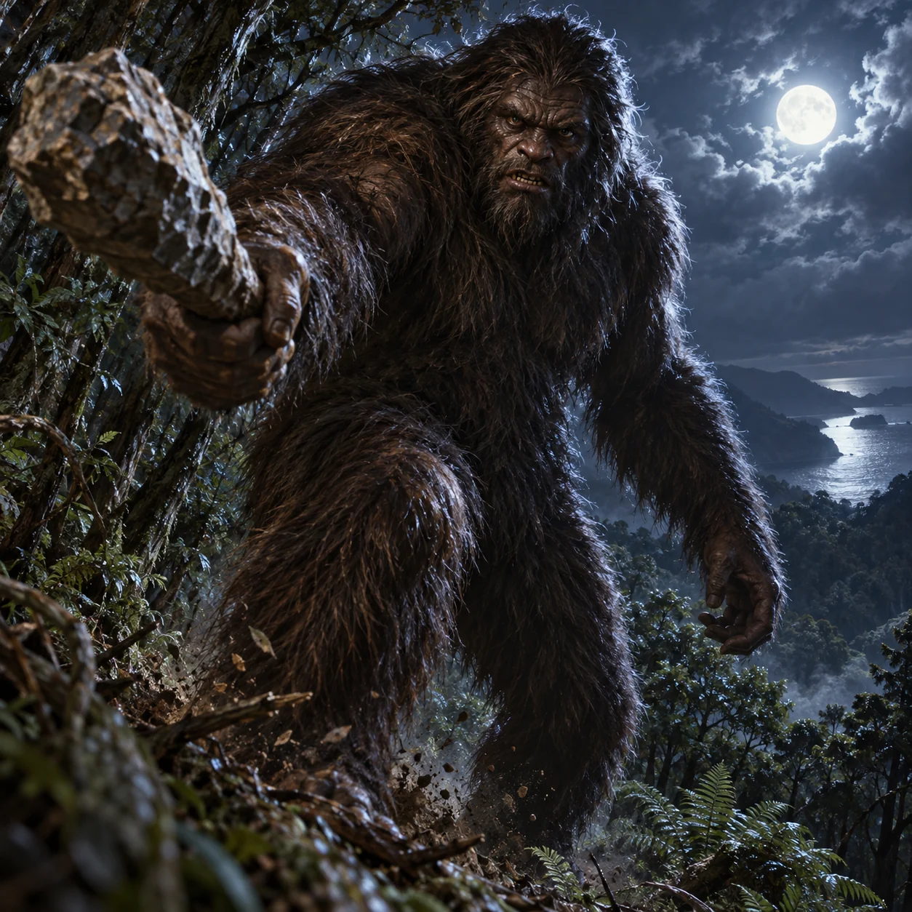
Maero-linked Moehau variant: large dark-haired bipedal wild man with stone club, selecting c02/c07 tradition and c09 Moehau morphology.
Aura: Distinctive documented anatomy moehau-c07,moehau-c09 and action moehau-c07.
Audit ciri dan sumber
- [object Object]
- [object Object]
- [object Object]
Native1254 and200 inspected: large dark-haired biped c09 selects maero-linked c02 form, stone club and violent wild-man action c07. One head/two eyes/two arms/two legs, dense opaque hair covers body, forceful step toward viewer and club dominate at200. Mountain forest of Coromandel c01/c09; no invented powers, baboon form, horns, extra limbs, cultural motifs, text/aura/gore. Seven Sangar checks pass, threatening subject rather than ordinary animal.
Review sumberONE original square premium painterly cinematic Mitoloka illustration of Moehau, the large hairy bipedal creature reported from the Coromandel Peninsula.
ANATOMY: ONE large BIPEDAL humanlike creature, ONE head, TWO eyes, TWO arms and TWO legs, thick DARK BODY HAIR, no horns/extra limbs; hold ONE rough STONE CLUB in right hand, opaque hair conceals body. [moehau-c07,moehau-c09]
MOMENT: Step aggressively out of tree shadows, thrust stone club diagonally toward viewer, fierce malevolent expression; heavy shoulders dominate.
POWER: No supernatural effects; violent wild-man movement only, ordinary broken twigs and soil. [moehau-c07]
SCALE & CAMERA: extreme low close angle, subject fills80% of square; natural scale unless giant explicitly documented. Important features clear at200pixels.
LIGHT & WEATHER: one dominant cold moonlight through a gap in the clouds, strong rim light, deep walnut shadows, ordinary physical dust/moisture.
SURFACE: tactile natural fur/skin/scales where appropriate, coarse opaque textiles, rough stone, original visible painterly brushwork.
SETTING: Forest slopes of Mount Moehau, Coromandel Peninsula; do not depict sacred ritual or add cultural symbols. [moehau-c01,moehau-c08,moehau-c09]
MOOD: dangerous for hostile beings, awe-inspiring and respectful for gods/guardians, uncanny audacious for benign small spirits, never cute/calm/decorative.
HARD CONSTRAINTS: no text/lettering/logo/border/frame/watermark; no extra heads/limbs/fingers; no borrowed film/game/anime/comic design; no nudity or explicit gore; no generic glow aura, neon outlines, energy ribbons, floating runes.
Mogwai (Chinese culture)
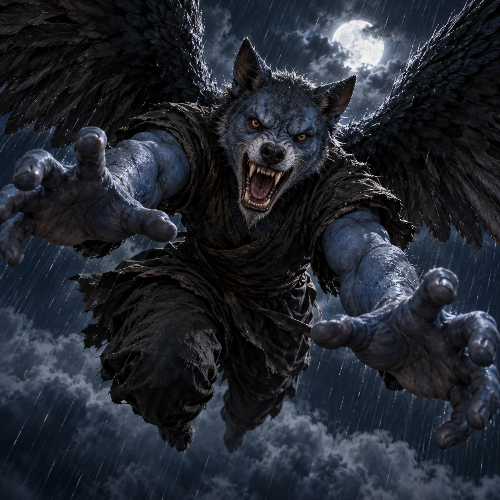
One air-traversing yaksha, a documented Mogui example, with blue complexion, animal head and two wings flying through the night.
Aura: Night flight and a strange dark radiance from c10 convey threat, with no generic bright aura.
Audit ciri dan sumber
- [object Object]
- [object Object]
Native 1254px and 200px inspected: one blue animal-headed yaksha (c04/c10), two wings, two arms/hands, two legs; canine head editorially interprets unspecified animal type. Direct descending flight and reaching hands dominate, fierce at 200px; black wing penumbra with moonlit physical rain, no generic luminous aura. Opaque torn dark clothes, no horns, extra limbs, symbols, gore or borrowed Gremlins design. All seven Sangar checks pass.
Review sumberONE original square premium painterly cinematic Mitoloka illustration of Mogwai, represented by ONE air-traversing yaksha, one of the documented demon examples, NOT a movie creature. ANATOMY: ONE powerful adult blue-skinned humanoid with ONE fierce broad CANINE ANIMAL HEAD, two natural canine eyes, two ears, TWO arms with hands, TWO legs and exactly TWO enormous dark feathered WINGS attached behind shoulders. Fully opaque simple weathered dark tunic and long dark trousers cover torso and legs. No horns, tusks, claws, crown, weapons or extra eyes [mogwai-chinese-culture-c04,c10]. MOMENT: SWOOP directly down toward viewer out of the night, wings sweeping strongly backward, both hands reaching into foreground, animal mouth open in a severe snarl. POWER: terrifying airborne yaksha flight; a strange GLOWING DARKNESS is a deep near-black indigo penumbra that swallows ambient starlight beside wings, NOT a luminous aura, neon halo or magic ribbons [c10]. SCALE & CAMERA: extreme low close camera beneath wings; animal head and blue hands dominate; no giant-size context. LIGHT & WEATHER: single harsh moon rim behind a thin cloud, deep black-blue night, slanting ordinary rain. SURFACE: wet coarse feathers, weathered blue skin, saturated dark cloth. SETTING: night air, faint clouds far below, no invented landmarks. MOOD: dangerous demonic flight, severe active confrontation, no cute furry pet, no borrowed Gremlins design. HARD CONSTRAINTS: no text, letters, logo, border, frame or watermark; no extra heads or limbs; no design borrowed from film, game, anime or comic; no nudity or gore; no generic glow aura, neon outline, runes or energy ribbons. Rich painterly natural surfaces, high contrast, strong subject silhouette at 200 pixels.
Mohan (legendary)
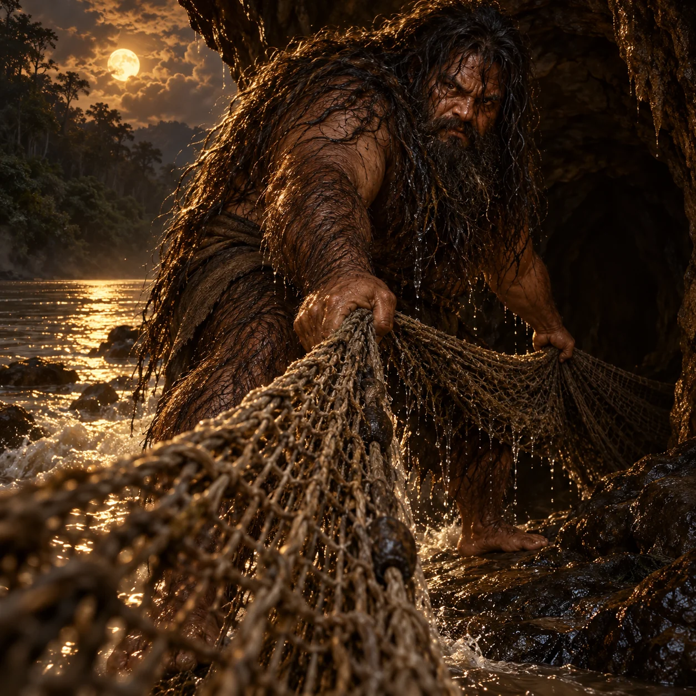
Very corpulent heavily long-haired river spirit hauling away a fishing net at a riverside cave.
Aura: Heavy unkempt hair/corpulent form c10 and forceful net theft c07 create uncanny threat without aura.
Audit ciri dan sumber
- [object Object]
- [object Object]
- [object Object]
Native and 200px inspected: one very bulky corpulent human-like figure with unusually abundant long unkempt hair covering torso/shoulders/legs and thick beard; two hands strain empty net, foot braced at cave. Opaque wrap visible under hair, no nudity. Forceful net theft, confrontational gaze and extreme hair silhouette remain uncanny at thumbnail, not relaxed fisherman. No horns/hooves/watermagic, victims, text or aura. Seven Sangar checks pass.
Review sumberONE original square premium painterly cinematic Mitoloka illustration of the Mohan, the heavily haired corpulent Colombian river spirit.
ANATOMY: ONE very CORPULENT human-like figure, ONE head, TWO natural eyes, TWO arms and TWO legs; abundant LONG UNKEMPT dark HAIR covers much of torso, shoulders and legs, long tangled beard almost merging with body hair. Broad weathered face half-hidden by filthy wet strands, fully opaque coarse dark chest cloth and waist wrap beneath hair, no nudity. No horns, hooves, animal head or invented giant scale [mohan-legendary-c10].
MOMENT: Haul a stolen empty fishing NET violently backward into a riverside cave, both thick hands gripping the wet net as it stretches toward foreground, body braced and head turning with a ferocious glare directly toward viewer. Water pours from real net knots, one bare foot braces on wet rock.
POWER: steals fishermen's nets, no visible magic or water-control effects [mohan-legendary-c07].
SCALE & CAMERA: extreme low close angle at river edge, hairy corpulent head/shoulders and net-pulling arms fill square, normal human-like size through framing, no tiny people comparator.
LIGHT & WEATHER: one low amber moon shaft catches wet hair and strained net fibres, deep walnut cave shadows, ordinary river spray and humidity.
SURFACE: matted wet long body hair, thick dirty beard, weathered skin, coarse opaque wrap, muddy rope fishing net, slick cave stone.
SETTING: Colombian jungle river with a dark waterside cave at night [mohan-legendary-c11].
MOOD: dangerous uncanny river spirit caught in forceful net theft, never ordinary fisherman, cute hairy mascot or calm portrait. No victims, fish injury, gore or glowing aura.
HARD CONSTRAINTS: no text, lettering, inscriptions, logo, border, frame or watermark; no extra heads, limbs or fingers; no design borrowed from any film, game, anime or comic; no nudity or explicit gore; no generic glow aura, neon outline or energy ribbons. Premium painterly brushwork, dark warm walnut and antique gold palette, square composition.
Mokosh
Menunggu gambar yang lolos audit
Mommotti
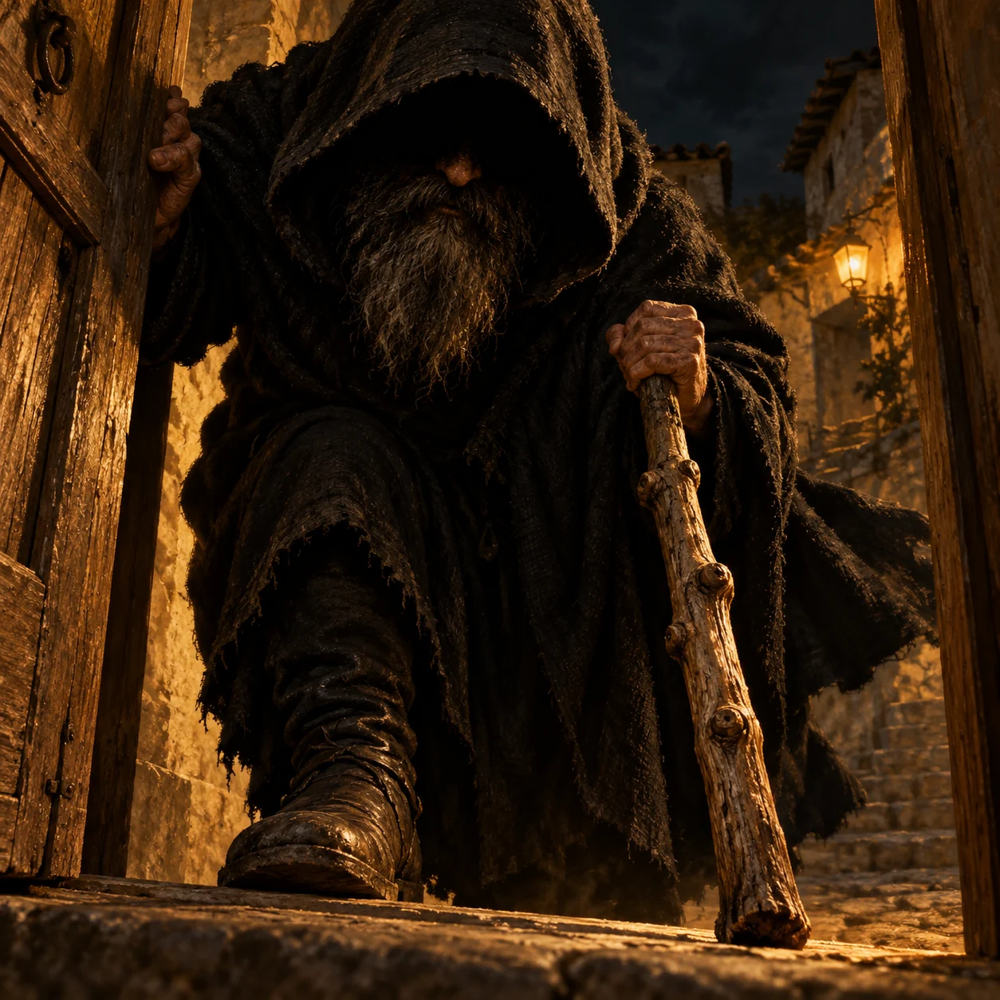
Sardinian black-cloaked bogeyman with hidden eyes, thick beard, knotty stick and battered black boots.
Aura: Confrontational hood-hidden face/beard and documented knotty staff c03/c04 provide night-bogeyman dread without aura.
Audit ciri dan sumber
- [object Object]
- [object Object]
Native and 200px inspected: long black hooded cloak completely conceals eyes, thick beard, one knotty stick and battered black boots; two hands, normal humanoid anatomy. Active looming threshold step/listening bend and dark faceless hood create ominous bogeyman close encounter at 200px, no relaxed traveler. No sack/horns/text/glow/victims. All seven Sangar checks pass.
Review sumberONE original square premium painterly cinematic Mitoloka illustration of Mommotti, the Sardinian bogeyman who listens from house to house.
ANATOMY: ONE man-like being in a long pitch-BLACK HOODED CLOAK, hood pulled far forward so BOTH EYES completely HIDDEN in pure darkness, thick coarse BEARD visible under hood. TWO arms and TWO legs fully covered, battered BLACK BOOTS, ONE rough KNOTTY STICK clutched in one hand. No horns, claws, skeleton or invented sack [mommotti-c03,mommotti-c04].
MOMENT: Loom around a half-open old village door toward viewer, bend his hooded head close as if listening intently, one hand braces doorframe and other drives knotty stick down on foreground doorstep; one battered boot steps over threshold, black cloak billows in ordinary night wind. Beard and hood opening occupy most upper frame.
POWER: no documented visible power; dread through hidden eyes, threatening forward movement and nocturnal listening only [mommotti-c04].
SCALE & CAMERA: extreme low doorstep close angle, figure fills whole square, normal man-like size relative door, not giant scale.
LIGHT & WEATHER: one off-frame low amber house lamp rakes coarse beard, stick knots and cloak edges, absolute black inside hood, deep walnut shadows, ordinary airborne dust.
SURFACE: frayed heavy black wool, coarse grey-black beard, cracked black boot leather, knotted wood and old stone doorstep.
SETTING: Sardinian village house threshold on night house-to-house round [mommotti-c01,mommotti-c04].
MOOD: intense ominous supernatural bogeyman, never ordinary relaxed traveler, cute, comic or decorative. No children, victims, injury or gore.
HARD CONSTRAINTS: no text, lettering, inscriptions, logo, border, frame or watermark; no extra heads, limbs or fingers; no design borrowed from any film, game, anime or comic; no nudity or explicit gore; no generic glow aura, neon outline or energy ribbons. Premium painterly brushwork, dark warm walnut and antique gold palette, square composition.
Moon Lake Monster
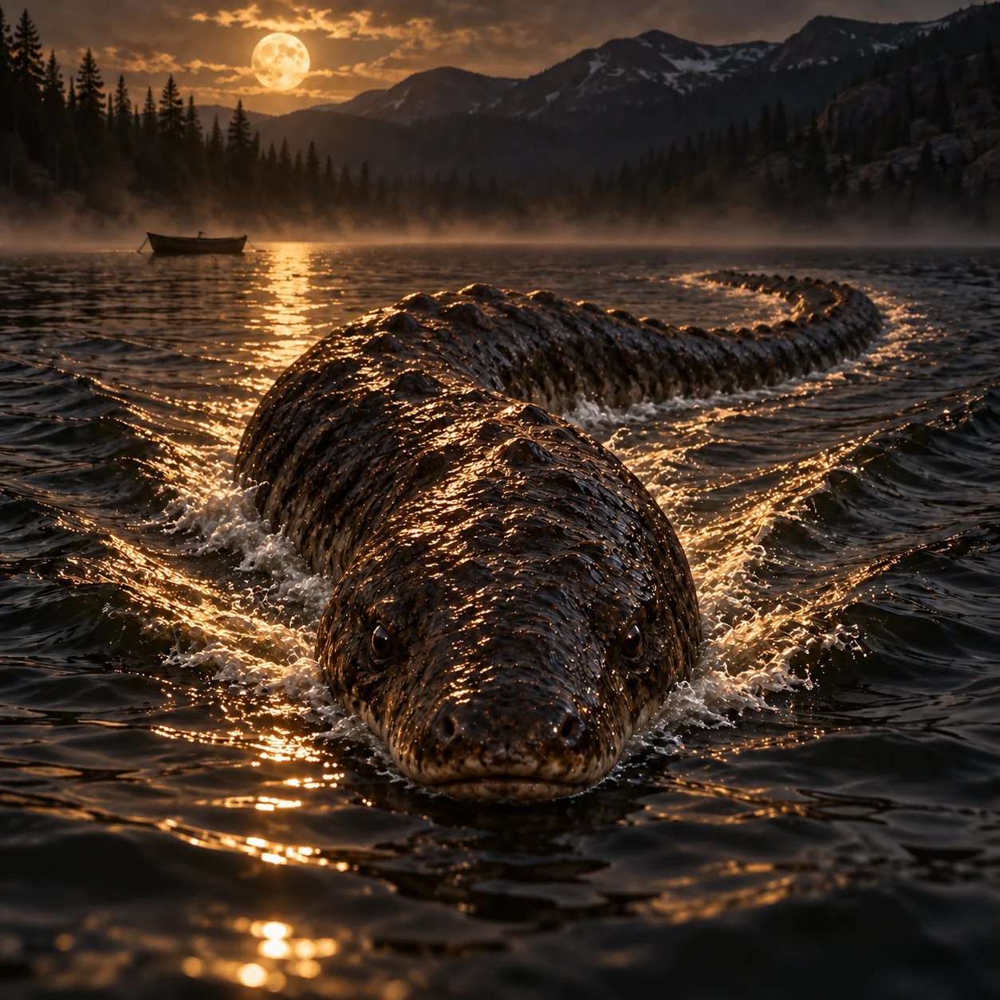
Twelve-to-fifteen-foot dark scaled serpent-like creature with bumpy-log back cutting a V wake across Moon Lake.
Aura: Close dark scaled bumpy serpent c04/c06 and Vwake c04 make the reported creature palpable, without invented power.
Audit ciri dan sumber
- [object Object]
- [object Object]
- [object Object]
Native and 200px inspected after morphology correction: one dark limbless serpent-like body with low rounded bumpy-log scaled back, no dorsal triangular spikes, no limbs/flippers/horns. Broad reptilian head approaches directly, long body trails in clear V-shaped wake. Low close encounter makes creature dominant/dangerous at 200px, empty rowboat contextual not giant size. No magical power/text/glow/victims. Seven Sangar checks pass; first crocodilian/spiky attempt archived.
Review sumberEDIT the Moon Lake Monster image. Preserve lake, empty distant boat, moon, Uinta mountain background, V-shaped forward wake, dark wet scales and square painterly style. Correct creature to a visibly LIMBLESS SERPENT-LIKE being rather than crocodile: remove EVERY pointed triangular dorsal scute/spike and replace with LOW ROUNDED IRREGULAR LOG-LIKE BUMPS covered in rough scales, no ridge of regular triangles. Lift its front body in a single thick S-shaped serpent bend approximately one head-height above the water, head still leaning DOWN toward viewer and remains large foreground, TWO small natural eyes and blunt CLOSED-MOUTH snake-like head. Body is uniform thick serpent body narrowing only toward a long single tail, no distinct dinosaur neck, no limbs/flippers/fins/horns. Keep approximate 12-15 foot length and boat comparison, no giant scale. Make dark serpent head/body dominate, tense forward movement not cute. No text, aura, energy, people, injury or gore. Source morphology: dark serpentlike and bumpy-log scaled back [moon-lake-monster-c04,moon-lake-monster-c06].
Mormo
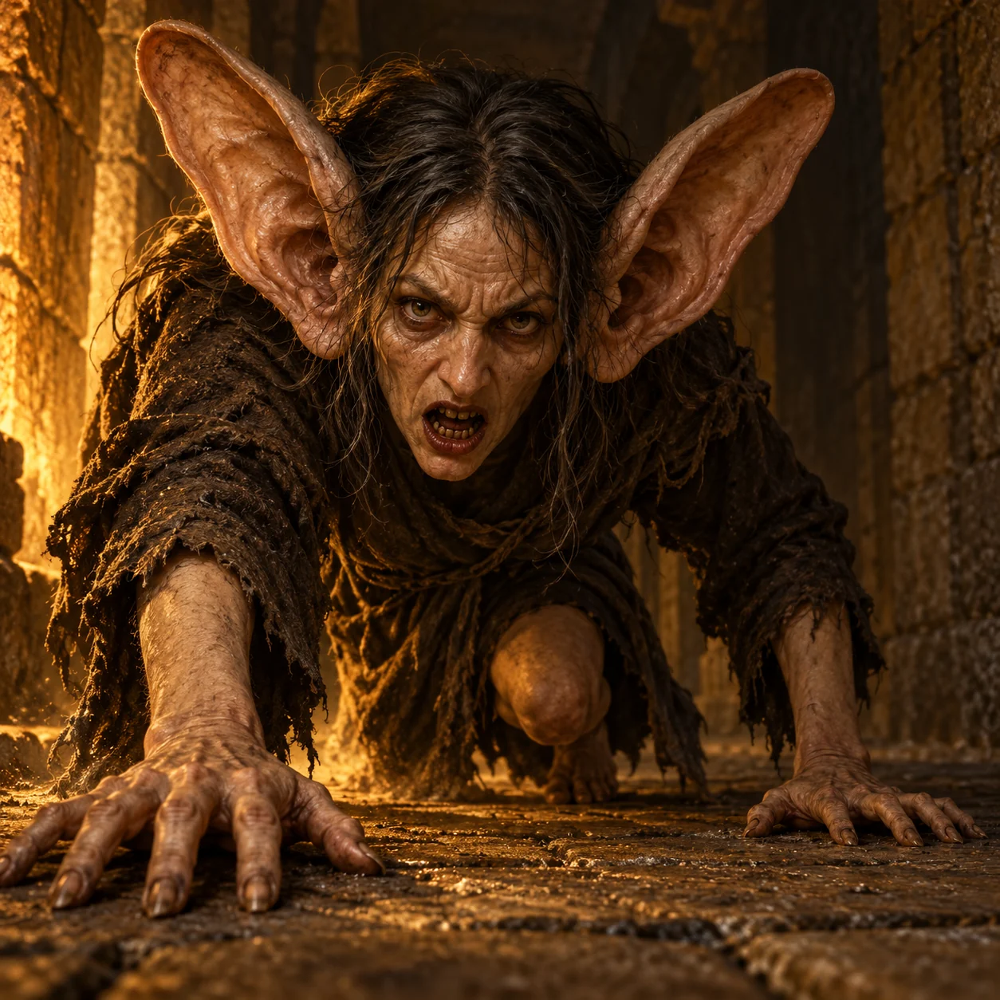
Female bogey spirit crawling on all fours with huge ears; a single current face avoids invented multihead transformation.
Aura: Huge ears and quadrupedal female spirit stance c03 make documented uncanny anatomy, not an ordinary woman.
Audit ciri dan sumber
Native and 200px inspected: one adult female spirit, enormous ears almost face-length or larger, two eyes/one current face, two hands planted and two bent legs in all-fours crawl. Opaque rough robe covers torso/pelvis, no extra face or head. Direct fierce face and unnatural ears/crawl dominate at 200px, unmistakably uncanny. No victims, gore, text, glow or copyrighted design. Seven Sangar checks pass.
Review sumberONE original square premium painterly cinematic Mitoloka illustration of Mormo, the female Greek bogey spirit described as huge-eared and walking on all fours.
ANATOMY: ONE adult FEMALE spirit with ONE current human-like head, TWO eyes, TWO ENORMOUS EARS extending sideways and upward each nearly as long as her face. Ears are rough fleshy elongated humanlike ears, not horns or wings. TWO arms and TWO legs, ALL FOUR LIMBS contact the ground in a prowling quadrupedal stance. Fully opaque ragged dark wool robe with sleeves and tied lower folds keeps body covered; no nudity [mormo-c01,mormo-c03].
MOMENT: Crawl rapidly toward low viewer on all fours, both long hands spread on stone before her, one knee advancing and other foot pushing; immense ears lean forward, one severe wrinkled current face glares at viewer with mouth open. Do not show multiple faces or heads; a single phase of her changing appearance [mormo-c03].
POWER: no invented visible effect; recorded movement/anatomy only, no melting flesh, beams or aura.
SCALE & CAMERA: extreme ground-level close angle; huge ears and confrontational face dominate square above two forward hands, normal spirit-like humanoid scale through framing, no invented giant.
LIGHT & WEATHER: one low amber oil lamp off frame throws harsh sidelight on oversized ears and face, deep walnut stone shadows, ordinary dust kicked by crawl.
SURFACE: deeply lined adult skin, coarse huge ear folds, rough opaque black-brown wool, dusty stone floor.
SETTING: editorial ancient Greek dark stone passage, no specific site asserted.
MOOD: intensely dangerous uncanny bogey spirit, never cute elf ears, normal crawling woman, comic character or decorative pose. No children, victims, gore or copyrighted design.
HARD CONSTRAINTS: no text, lettering, inscriptions, logo, border, frame or watermark; no extra heads, limbs or fingers; no design borrowed from any film, game, anime or comic; no nudity or explicit gore; no generic glow aura, neon outline or energy ribbons. Premium painterly brushwork, dark warm walnut and antique gold palette, square composition.
Mugwump (folklore)
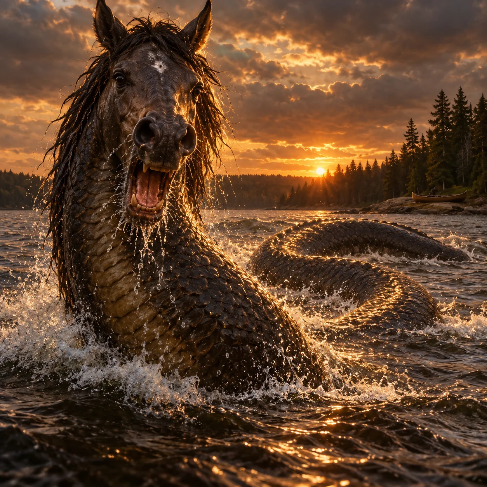
Lake Timiskaming monster with horse head and long serpent body over twenty feet.
Aura: Clearly hybrid horsehead/serpentbody c09 and documented length c04 dominate close water encounter without aura.
Audit ciri dan sumber
- [object Object]
- [object Object]
Native and 200px inspected: one horse head with two equine ears/eyes/long muzzle and mane joins clearly scaled thick legless serpent body and single trailing S-curve/tail. No horse legs/torso or fish fins mixed; horse teeth natural rather than predator fangs. Active rearing bellow/spray and hybrid body unmistakable at 200px, boat secondary scale context. No text/aura/victims. Seven Sangar checks pass.
Review sumberONE original square premium painterly cinematic Mitoloka illustration of the Mugwump of Lake Timiskaming, a lake monster with a horse's head and a serpent's body.
ANATOMY: ONE unmistakable HORSE HEAD with long equine muzzle, two HORSE EARS, TWO natural dark eyes, short wet horse mane at top of neck; head directly joins ONE long LIMBLESS SCALED SERPENT BODY with single tapering tail, no horse torso, no legs, fins, flippers, horns or wings. Total length OVER TWENTY FEET, not hundred-foot giant [mugwump-folklore-c04,mugwump-folklore-c09].
MOMENT: Rear the thick front of the serpent body through the lake surface and lean horse head toward viewer with nostrils flared and mouth open in a horse bellow; remaining long legless body undulates behind in one clear broad S bend, water slides from wet muzzle and scales.
POWER: no documented visible power; movement physically displaces lake water, no magic breath or aura.
SCALE & CAMERA: extreme water-level close angle; equine head and thick scaled serpent front fill square, distant EMPTY canoe on shore contextualizes 6m-plus length, no victims.
LIGHT & WEATHER: one warm sunset shaft through cloudy lake sky rims horse ears, wet mane and dark scales, deep walnut water shadows, ordinary spray.
SURFACE: wet dark equine muzzle and mane merging into rough black-bronze serpent scales, textured cold freshwater.
SETTING: Lake Timiskaming on Ontario-Quebec border, dark Canadian forest shoreline secondary [mugwump-folklore-c01].
MOOD: dangerous imposing hybrid lake monster in active surfacing, never ordinary swimming horse, cute seahorse mascot, calm animal or distant landscape.
HARD CONSTRAINTS: no text, lettering, inscriptions, logo, border, frame or watermark; no extra heads, limbs or fingers; no design borrowed from any film, game, anime or comic; no nudity or explicit gore; no generic glow aura, neon outline or energy ribbons. Premium painterly brushwork, dark warm walnut and antique gold palette, square composition.
Mulher marinha
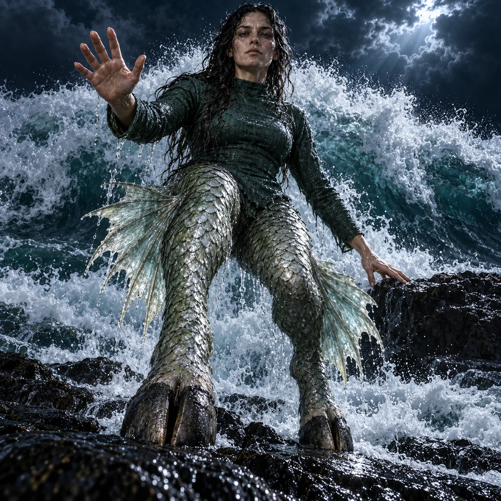
Grave benevolent sea daughter emerges through breaking Atlantic surf, with irregular body scales, large leg fins and cloven goat hooves.
Aura: Distinct two scaled finned legs/goat feet c02 and active shoreline emergence c03 create benevolent awe, no aura.
Audit ciri dan sumber
- [object Object]
- [object Object]
Native 1254px and 200px inspected: one grave adult sea woman, direct steady gaze, dark opaque high-neck long-sleeved top, two arms with five fingers each; waist-down organic raised scales, two separate legs, two large ragged translucent side fins, two clearly split cloven goat hooves. Both fins and hoof splits remain unmistakable at 200px, not tights or boots. Moonlit storm surf breaks behind her emergence c03; wet hair and pouring water, no glamour makeup or sunset. Open palm greeting conveys benevolent authority. No kelp asserted, invented magic, aura, text or borrowed design. All seven Sangar checks pass.
Review sumberONE original square premium painterly cinematic Mitoloka illustration of Mulher Marinha, a benevolent Portuguese sea daughter emerging from the Atlantic. ANATOMY: ONE fully ADULT woman, ONE head, two natural eyes, TWO human arms, one torso fully dressed in plain OPAQUE HIGH-NECK LONG-SLEEVED dark sea-green top. From WAIST DOWN her own body is covered in IRREGULAR THICK OVERLAPPING SILVER-GREEN FISH SCALES, raised and rough, organic flesh scales not leggings, not scale-print costume. Exactly TWO SEPARATE LEGS ending in TWO LARGE CLOVEN GOAT HOOVES, each hoof with two dark horn halves and a deep central split. Large RAGGED TRANSLUCENT FINS run along the OUTER side of each leg, from thigh to calf; both fins conspicuous as broad jagged fans projecting outward. No fish tail, horns, wings, extra limbs or jewelry [mulher-marinha-c01,c02]. MOMENT: RISE FROM THE SEA itself and plant two goat hooves powerfully on low black basalt before the viewer. A natural breaking WAVE towers immediately behind and above her shoulders, its white water pouring from hair, top and scales. One hand opens palm forward in grave benevolent greeting, other extended low to steady herself, five fingers on each hand. Face is GRAVE AND OTHERWORLDLY, mature weathered features with salt and water, severe cheekbones, shut mouth, steady direct EYE CONTACT WITH VIEWER. No makeup, glamour smile, dreamy look, parted-lip model face or fashionable pose. Heavy dark wet hair clings to face and shoulders, not salon waves. POWER: leaves water and brings fortune, benevolent presence only; the sea wave is ordinary physical surf, NOT a wave controlled by magic, no destructive attack or aura [c03]. SCALE & CAMERA: VERY LOW CLOSE camera near black basalt; FULL FIGURE from two big foreground goat hooves to head fills square. The two scaled legs, broad jagged translucent side fins, and distinctly cloven bare hooves must read instantly at 200 pixels. Hooves are NOT boots. Normal human size, large only by close perspective. LIGHT & WEATHER: DARK MOONLIT ATLANTIC NIGHT with one hard shaft of cold moonlight through storm-cloud gap striking wet scales, face, both fins and hoof splits; flying white surf against deep black-green water, strong contrast. NO visible moon disc, no sun disc, no orange sunset sky, no beach postcard. SURFACE: rough wet organic scales, thin jagged fin membranes with ribs, ridged bare goat horn hooves, salt-crusted woven top, coarse wet hair, rough black basalt. SETTING: rocky Atlantic sea shore as she emerges from water [c03]. MOOD: solemn compassionate supernatural awe, powerful daughter of sea, never evil or threatening, never pretty fashion portrait or mermaid costume. HARD CONSTRAINTS: no text, letters, logo, border, frame, watermark; no extra heads, limbs or digits; no borrowed film/game/anime/comic designs; fully opaque top and body scales, no nudity or gore; no aura, neon, runes or energy ribbons. Square premium painterly cinematic brushwork.
Mungoon-Gali
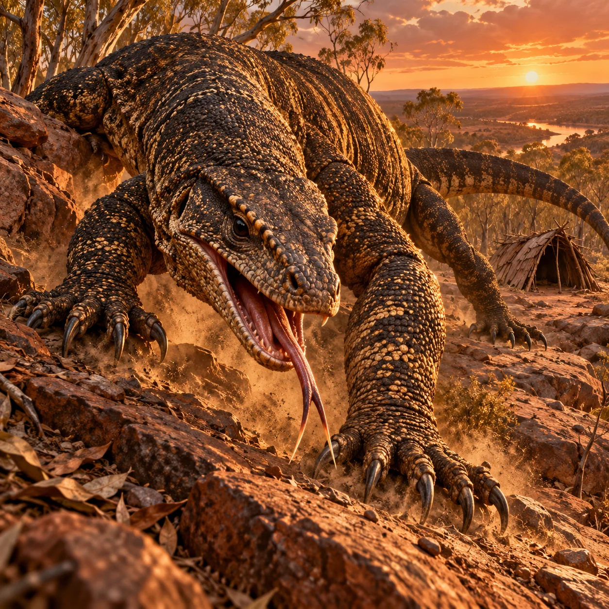
Enormous ancestral goanna in pre-loss-of-venom period, imposing close descent without venom beams.
Aura: Documented giantgoanna c01/c05 dominates a close physical charge; venom only inferred through open natural mouth, no aura.
Audit ciri dan sumber
- [object Object]
- [object Object]
Native and 200px inspected: one giant goanna with wedge head/two eyes/forked tongue, exactly four sprawled legs (two foreground, rear right, rear left over ledge), one long tapering tail, no sail/horns. Empty shelter and trees set giant ancestral scale, active downward scramble/dust and open natural mouth remain imposing at 200px. No visible venom mist, sacred motifs, text, victims or aura. Seven Sangar checks pass.
Review sumberONE original square premium painterly cinematic Mitoloka illustration of Mungoon-Gali, the enormous venomous ancestral goanna of Yuwaalaraay tradition.
ANATOMY: ONE GIANT Australian GOANNA/MONITOR LIZARD, one long wedge-shaped reptilian head, TWO natural dark eyes, FOUR muscular sprawled reptile LEGS and FOUR clawed feet, ONE long thick tapering tail. Rough dark brown and ochre mottled scales, long forked tongue, natural small pointed monitor teeth; no horns, dorsal sail, wings, crocodile body or extra limbs [mungoon-gali-c01,mungoon-gali-c05].
MOMENT: Scramble down a rocky ledge toward viewer, body seen THREE-QUARTER SIDE so all FOUR legs and FOUR feet distinct: two front paws braced wide foreground, two rear paws staggered behind to the right, tail curves into background. Head leans low toward camera with mouth open in warning and forked tongue extended, physical dust lifts beneath claws.
POWER: venomous bite capability in ancestral time, no visible toxin clouds or venom beams, no victim or biting contact [mungoon-gali-c01].
SCALE & CAMERA: extreme ground-level low close angle; huge goanna head/body dominate, one tiny EMPTY adult-sized bark shelter in background shows ancestral giant size, no people. This is great ancestral form, not present dwarfed five-foot form [mungoon-gali-c05].
LIGHT & WEATHER: one low amber sunset rims coarse scales and forked tongue, deep walnut rock shadows, ordinary airborne dust and dry leaf litter.
SURFACE: rough pebbled brown-ochre monitor scales, curved claws, dry bark and red-brown stone.
SETTING: editorial Australian dry eucalyptus woodland and rocky ledge, no sacred art motifs or named site invented.
MOOD: awe-inspiring dangerous ancestral reptile through documented size and bodily presence, never ordinary pet lizard, cute, static or decorative.
HARD CONSTRAINTS: no text, lettering, inscriptions, logo, border, frame or watermark; no extra heads, limbs or fingers; no design borrowed from any film, game, anime or comic; no nudity or explicit gore; no generic glow aura, neon outline or energy ribbons. Premium painterly brushwork, dark warm walnut and antique gold palette, square composition.
Na Ruixa
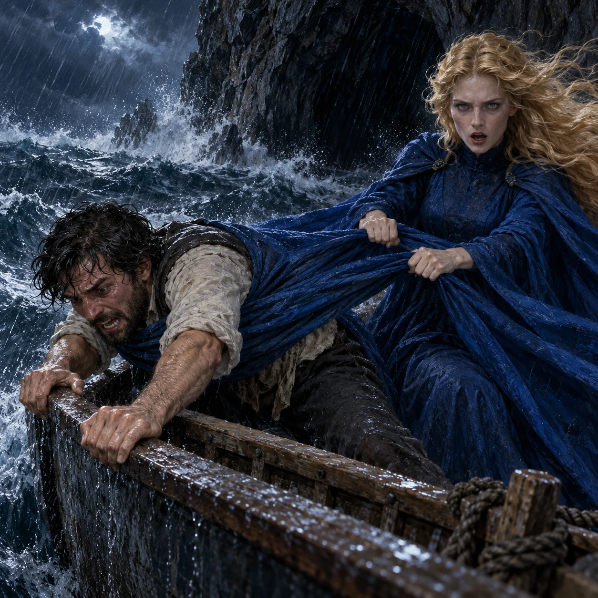
Cold severe golden-haired fairy sings and hauls taut blue cloak backward around a same-scale sailor who resists by pitching forward and clutching the gunwale.
Aura: Danger comes from c04/c07 physical cloak capture and enchanting song plus cold malign c05 gaze; no generic glow.
Audit ciri dan sumber
- [object Object]
- [object Object]
- [object Object]
Native1254,200 and sailor-hand crop inspected: cold severe unsmiling golden-haired adult fairy c05/c06 sings c07 and grips one continuous taut blue cloak c04 with two hands. Equal-scale adult sailor strains FORWARD clutching gunwale with BOTH five-fingered hands while cloak hauls torso BACKWARD; capture-in-progress, his body is not yet overboard. Torso trapped underarms, not neck, terrified face directed away from fairy. Faces far apart, no embrace or near-kiss. Cloak tension and desperate resistance read dangerous200; dark storm/rain/cave c04 with cold light, no warm horizon. Two adults, four arms, no extra limbs, opaque clothes, no injury/drowning/aura/text. Seven Sangar checks pass for source-grounded dangerous capture. Prior Claude receipt/PNG archived whole.
Review sumberONE original square premium painterly cinematic Mitoloka illustration of Na Ruixa, the malign golden-haired Mallorcan fairy singing as she physically captures a resisting adult sailor with her wide blue cloak in a storm.
ANATOMY: ONE adult golden-haired fairy woman, one head, two eyes, two arms, two legs beneath fully opaque high-necked long-sleeved dark BLUE GOWN and ONE continuous WIDE BLUE CLOAK attached at shoulders. Beautiful but COLD, SEVERE, UNSMILING face, eyes hard and fixed directly at viewer, mouth OPEN in enchanting song, NO tender eyes or glamour softness. Long golden-blond hair blown across dark storm. No wings, crown, fins or invented anatomy. [na-ruixa-c04,na-ruixa-c05,na-ruixa-c06,na-ruixa-c07]
MOMENT: HAUL a fully clothed adult sailor BACKWARD OVER THE BOAT'S GUNWALE toward dark water. The sailor RESISTS: his hips/legs still brace inside the boat, his upper back bends over the side, BOTH HANDS clutch the hard wooden gunwale desperately with taut arms, white knuckles, straining shoulders, terrified face turned DOWN toward his grip, never gazing at her. The wide BLUE CLOAK wraps tightly around HIS TORSO UNDER HIS ARMS, NOT HIS NECK, and visibly PULLS his upper body toward the cave and black sea. The fairy is in the same boat to his RIGHT, BOTH HER HANDS grip and haul the cloak's taut folds toward her right side. The taut diagonal cloth, his backward-straining torso and resisting hands must make the dangerous CAPTURE unmistakable. [na-ruixa-c04,na-ruixa-c07]
SPATIAL CLARITY: fairy on RIGHT side of square, sailor on LEFT, both at SAME depth in SAME normal small fishing boat; equal adult HEAD SIZES and natural human scale, never giantess. Their FACES are at least ONE FULL HEAD WIDTH APART, never touching, leaning toward each other, embracing or kissing. She stares forward out of scene; he looks down in alarm toward boat grip. His clothed lower body stays inside boat, upper torso hauled toward sea; no falling in, drowning or injury. Blue cloth is ONE continuous fabric cloak, no tendrils or independent hands.
POWER: documented enchanting song and cloak capture c04/c07. Physical cloth under tension visibly captures unwilling prey; real gale-driven rain and sea spray. No musical symbols, voice beams, tentacles, eye effects or glow.
SCALE & CAMERA: tight low view from boat bow looking toward gunwale and cave, both same-scale adults fill frame, fairy and tense blue cloth dominate. Boat rail clearly separates safe interior from black sea beyond; sailor's resisting hands large enough to read. Tight clear two-person composition.
LIGHT & WEATHER: BLACK STORM CLOUDS, cold narrow moonlight through one cloud fissure, deep blue-black shadows, driving slanted rain, violent white spray and hard rim on blue cloth. NO SUNSET, warm horizon, postcard sky, golden-hour glow or calm sea. Golden hair is hair colour, NOT a source of light.
SURFACE: rough heavy wet BLUE woven cloth stretched under tension, opaque gown, wet rope, weathered boat timber, cold black seawater, wet blond hair. Original visible painterly brushwork.
SETTING: black sea-cave mouth on Mallorcan coast and dangerous storm-lashed sea. [na-ruixa-c04]
MOOD: cold beautiful malign captor and terrified resisting prey; genuinely dangerous, never romantic, tender, glamorous, cute, calm, decorative or erotic.
HARD CONSTRAINTS: no embrace or near-kiss, no tiny sailor/giantess, no injuries, blood, gore, drowning or nudity. No neck strangling. Exactly two adults, four arms total, no extra limbs/fingers. No text, music notes, logo, border, frame or watermark. No generic aura, glow, neon, energy ribbon or borrowed film/game/anime/comic design.
Nemty
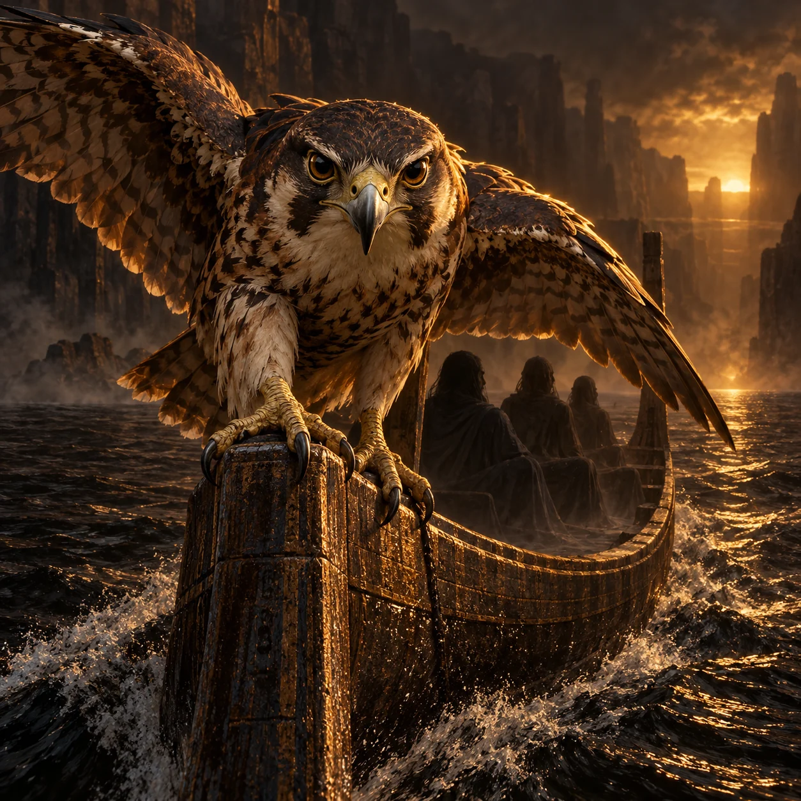
Falcon god standing on prow of underworld ferry carrying departed souls across dark river.
Aura: Falcon-on-boat form c03 and underway ferry of souls c08 provide sacred awe, no invented crown/aura.
Audit ciri dan sumber
- [object Object]
- [object Object]
Native 1254px and 200px inspected: one falcon with two wings and two taloned feet grips boat prow (c03); severe direct gaze and forward balancing wings dominate. Ferry cuts through current with three clothed shadowy soul passengers (c08), stern bank darkness and a remote light. No human-bird hybrid, crown, invented divine regalia, text or aura. Boat underway gives sacred active passage rather than passive bird portrait; awe and identity remain legible at 200px. All seven Sangar checks pass.
Review sumberONE original square premium painterly cinematic Mitoloka illustration of Nemty, the ancient Egyptian falcon god of ferrymen carrying the departed across the underworld river.
ANATOMY: ONE living FALCON standing firmly on the PROW OF A BOAT, ONE head, TWO natural piercing falcon eyes, curved falcon beak, TWO feathered WINGS and TWO taloned FEET. No human torso, crown, sun disk, jewellery, horns or invented symbols [nemty-c03].
MOMENT: Lean forward over the boat's prow toward low viewer with wings partly OPEN for balance, talons gripping wood, gaze commanding and direct while the ferry cuts strongly through dark current. THREE anonymous fully clothed ADULT soul-passengers sit deep behind in the boat as quiet visibly incorporeal dark silhouettes, upper bodies coherent but their lower edges delicately translucent within the ferry, faces mostly hidden, no skeletons or injuries.
POWER: ferryman of the afterlife carrying dead souls across the underworld river, show physical boat wake and shadowed passengers only, no glow, energy beams or floating glyphs [nemty-c08].
SCALE & CAMERA: extreme low close view from just before prow; falcon's great face, spread shoulder feathers and talons dominate foreground, passengers small through depth, falcon proportion relative boat rail not a giant bird.
LIGHT & WEATHER: one dominant amber light far across river gives rim on living falcon feathers and prow, deep walnut-black underworld water, ordinary low water mist.
SURFACE: layered russet-brown/slate falcon feathers, hooked beak, gripping talons, worn plain Egyptian-style wooden ferry and physical spray.
SETTING: river of the underworld, dark monumental rock banks secondary, no inscriptions or temple symbols [nemty-c08].
MOOD: reverent awe at active sacred guide and passage, never ordinary pet falcon, cute mascot, calm still life or landscape.
HARD CONSTRAINTS: no text, lettering, inscriptions, logo, border, frame or watermark; no extra heads, limbs or fingers; no design borrowed from any film, game, anime or comic; no nudity or explicit gore; no generic glow aura, neon outline or energy ribbons. Premium painterly brushwork, dark warm walnut and antique gold palette, square composition.
Niemotsu no Ko
Menunggu gambar yang lolos audit
Nightmarchers
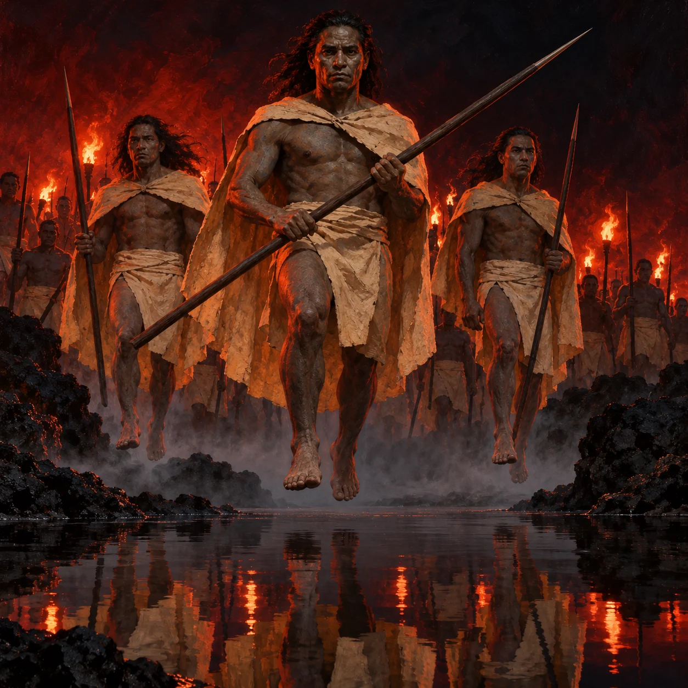
Grave ancient Hawaiian warrior ghosts in smooth beaten kapa with one-piece hardwood spears, levitating clearly above undisturbed coastal water.
Aura: Levitation c06 and torchlit approach c11 create sacred awe, no added aura or glowing eyes.
Audit ciri dan sumber
- [object Object]
- [object Object]
- [object Object]
Native 1254px and 200px inspected: grave painterly ancient warrior spirits in smooth beaten bark-cloth malo and capes, no woven sackcloth togas. Spears are continuous narrow dark wood with simple tapered points, no widened separate blades or socket. Leader looks directly at viewer; normal human anatomy and hand grip. Wide gaps separate all foreground feet from undisturbed pool and reflections (c06), leg mist does not conceal levitation at 200px. Deadly sacred rank c01/c07, real red torches sole lighting c11, no body aura, invented tattoos, skeletons or eye beams. Self-rejected first correction for blade-like spear, retained archive. All seven Sangar checks pass.
Review sumberONE original square premium PAINTERLY CINEMATIC Mitoloka illustration of Nightmarchers, the deadly sacred GHOSTS of ancient Hawaiian warriors. Use strongly visible oil-painted brushwork and sculpted shadows, never photographic faces. ANATOMY: THREE distinct ADULT Hawaiian warrior spirits foremost, more shadowy warriors marching in ranks behind. Each normal human size, ONE head, TWO natural dark eyes, TWO arms and TWO legs. Grave angular ancient faces, ashen desaturated skin in red torchlight, no modern portrait resemblance, no wounds, skeletal features, glowing eyes, masks or tattoos [nightmarchers-c01,c05]. COSTUME: fully opaque plain MALO LOINCLOTHS wrap hips and groin, shoulder capes hang over back and shoulders; cloth is SMOOTH BEATEN KAPA BARK CLOTH, flat dense cream/tan sheets with soft crumples and clean edges, NOT woven fabric, NOT burlap, NOT sacks, no fringes, no ankle skirts, no togas, no robe. No helmets, feathers, jewelry, armor or fantasy costume [c05,c18]. WEAPONS: long ROUND DARK WOODEN POLES with their own ends simply WHITTLED TO THIN NEEDLE POINTS like giant sharpened pencils. Each pole maintains its NARROW CYLINDRICAL THICKNESS until a smooth LONG TAPER at the very end, no widening whatsoever. One uninterrupted stick of matte dark brown wood. NEVER leaf shape, flat blade, flared or broadened tip, triangular spearhead, diamond point, socket, collar, separate head, binding, engraving, metal or stone. Think sharpened wooden fishing pole, not a medieval spear [c05]. MOMENT: ADVANCE inexorably toward viewer above a black still-water tidal pool, spear leader in foreground holding his wooden spear diagonally across torso with BOTH HANDS. His head faces straight at lens, severe unblinking DIRECT EYE CONTACT, mouth closed. Other warriors advance behind as a solemn sacred rank [c03,c04,c07]. POWER: all visible bare feet HOVER A FULL FOREARM LENGTH ABOVE THE FLAT WATER, not walking on water, not touching it. Leave an obvious wide EMPTY DARK GAP between every foot and its reflection. Feet at about ONE THIRD UP FROM BOTTOM of frame. Bottom third shows utterly STILL mirror water and UNDISTURBED reflections beneath them, NO ripples, wakes, splashes, footprints or touching shadows. Light physical cold grey mist low over water, thin enough not to hide the floating gap [c06]. SCALE & CAMERA: extremely low camera at water surface looking upward, leader fills height and fixes viewer with stare, feet and large empty hover gaps remain in frame. Human size, no giants. LIGHT & WEATHER: REAL RED-BURNING TORCHES among rear ranks are the ONLY LIGHT SOURCE, hard deep red-orange light across grave painted faces and smooth kapa with near-black shadows. No moon, moonlight, blue lighting, glowing bodies, fog aura or luminous outlines [c11,c18]. SURFACE: smooth beaten bark cloth, matte continuous dark wood, bare feet and stark weathered ancestral faces, black volcanic rocks, glass-flat black tidal water. SETTING: night Hawaiian lava-rock shoreline, dark ocean and further ranks behind, procession rising from ocean toward sacred sites [c04]. MOOD: overwhelming sacred ancestral authority, the DEAD approach and see the viewer, solemn dangerous awe, never a beach reenactment, ordinary friendly soldiers or calm living modern men. HARD CONSTRAINTS: no text, letters, logo, border, watermark; no extra heads, eyes, limbs or digits; no invented tattoos, skeletal features, glowing eyes, aura, runes, energy ribbons or borrowed film/game/anime/comic designs; no victims, nudity or gore. Strong painterly house style and hovering feet must be unmistakable at 200px.
Nonell de la neu
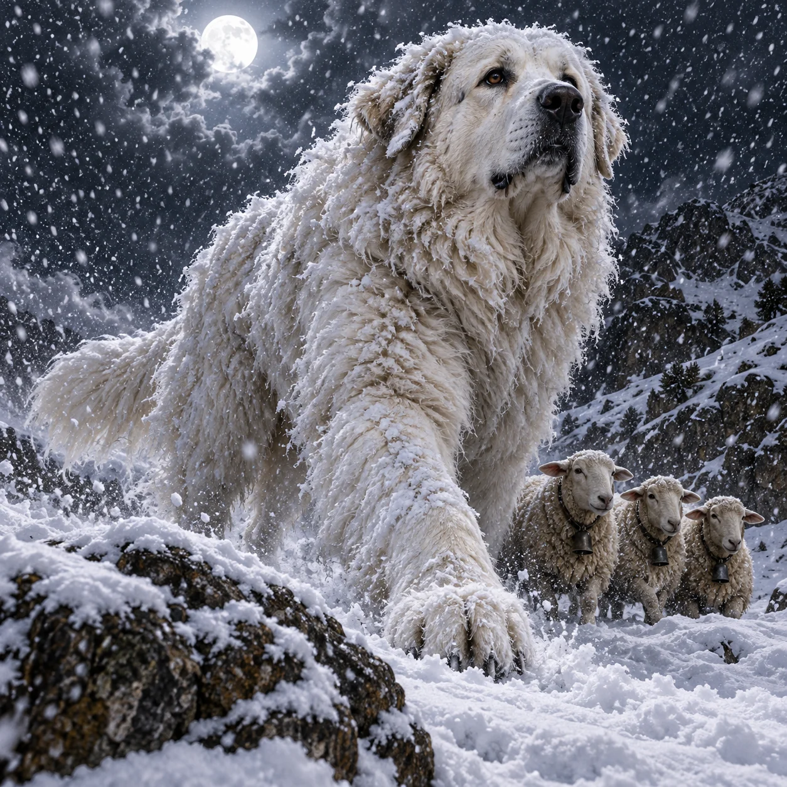
Horse-size great white dog carrying first snow toward a flock he peacefully protects.
Aura: Horse-sized white dog c01 with moving snowfall c02 gives awe; peaceful flock protector c05, never an evil attacking wolf.
Audit ciri dan sumber
- [object Object]
- [object Object]
Native 1254px and 200px inspected: one great white horse-size dog with one head, two eyes, two folded ears, one tail and natural quadruped stride (c01); rear legs partly occluded by body and snowfall. Three small bell-wearing sheep behind demonstrate protective role c05 and scale. Noble raised head and huge forward paw dominate 200px, first snow moving and settling around his passage c02, no attack or evil expression. No extra limbs, magical aura, symbols, text, gore or borrowed design. All seven Sangar checks pass.
Review sumberONE original square premium painterly cinematic Mitoloka illustration of Nonell de la neu, peaceful snow giant transformed into a GREAT WHITE DOG THE SIZE OF A HORSE. ANATOMY: ONE living huge white DOG, one broad dog head, two dark attentive eyes, two natural folded dog ears, FOUR sturdy canine legs and paws, ONE long white tail. Thick coarse white dog fur, clear dog muzzle; no antlers, horns, wings or human features [nonell-de-la-neu-c01]. MOMENT: STRIDE powerfully through the FIRST SNOW toward low viewer, front paw reaching past a foreground snow-covered stone, head raised with solemn protective alertness. Snow comes with him: a dense bank of falling physical snow sweeps behind and along his moving body and settles over the ground as he passes [c02]. Behind his horse-sized shoulders, three much smaller sheep with simple bells shelter together peacefully, protected by him [c05]. POWER: brings snow from place to place, guards flocks, no attack, growling hostility, fangs display, beam or luminous aura [c02,c05]. SCALE & CAMERA: extreme low camera near huge forward paw; body fills the square; small sheep behind at nearly same depth unmistakably establish HORSE-SIZE, not an ordinary sheepdog. LIGHT & WEATHER: one cold moonlight opening above first-snow cloud, luminous white fur rim against deep charcoal sky and dark brown rocks; dense ordinary snowfall, strong contrast. SURFACE: rough white fur clumped with snow, cold damp nose, weathered rocks, textured fleece. SETTING: high snowy Catalan pastoral country, dark mountain slope secondary. MOOD: noble awe-inspiring colossal guardian, overwhelming protective presence, never evil, cute pet, calm animal postcard or cartoon. HARD CONSTRAINTS: no text, letters, logo, border, frame or watermark; no extra heads or limbs; no design borrowed from film, game, anime or comic; no nudity or gore; no generic glow aura, neon outline, runes or energy ribbons. Rich painterly natural surfaces, high contrast, strong subject silhouette at 200 pixels.